<!doctype html>
<html lang="en">
<head>
  <meta charset="utf-8">
  <meta name="viewport" content="width=device-width, initial-scale=1">
  <title>arxiv digest — 2026-10-23</title>
  <style>
:root {
  --bg: #ffffff;
  --fg: #1f2328;
  --muted: #59636e;
  --border: #d0d7de;
  --card: #f6f8fa;
  --link: #0969da;
}
body {
  max-width: 980px;
  margin: 0 auto;
  padding: 2rem 1rem 5rem;
  font-family: -apple-system, BlinkMacSystemFont, "Segoe UI", Helvetica, Arial, sans-serif;
  line-height: 1.55;
  color: var(--fg);
  background: var(--bg);
}
a { color: var(--link); }
img { max-width: 100%; height: auto; }
pre, code { background: var(--card); border-radius: 6px; }
pre { padding: 1rem; overflow-x: auto; }
blockquote { border-left: 4px solid var(--border); padding-left: 1rem; color: var(--muted); }
details { margin: 0.6rem 0; }
summary { cursor: pointer; font-weight: 600; }
.paper-figures-scroll {
  display: flex;
  gap: 1rem;
  overflow-x: auto;
  overscroll-behavior-x: contain;
  padding: 0.75rem 0.25rem 1rem;
  margin: 1rem 0 1.25rem;
  border-top: 1px solid var(--border);
  border-bottom: 1px solid var(--border);
  scroll-snap-type: x proximity;
}
.paper-figure-card {
  flex: 0 0 min(260px, 72vw);
  scroll-snap-align: start;
  background: var(--card);
  border: 1px solid var(--border);
  border-radius: 12px;
  padding: 0.55rem;
}
.paper-figure-card img {
  display: block;
  width: 100%;
  max-height: 240px;
  object-fit: contain;
  background: white;
  border-radius: 8px;
}
.paper-figure-caption {
  display: block;
  margin-top: 0.5rem;
  color: var(--muted);
  font-size: 0.85rem;
}
.figure-strip-hint {
  color: var(--muted);
  font-size: 0.9rem;
  margin-bottom: -0.3rem;
}
</style>
  <script>
    window.MathJax = {
      tex: {
        inlineMath: [['$', '$'], ['\\(', '\\)']],
        displayMath: [['$$', '$$'], ['\\[', '\\]']],
        processEscapes: true,
        processEnvironments: true
      },
      options: {
        skipHtmlTags: ['script', 'noscript', 'style', 'textarea', 'pre', 'code'],
        ignoreHtmlClass: 'tex2jax_ignore',
        processHtmlClass: 'tex2jax_process'
      }
    };
  </script>
  <script id="MathJax-script" async
    src="https://cdn.jsdelivr.net/npm/mathjax@3/es5/tex-chtml.js"></script>
</head>
<body>
<header style="background-color: #333; color: white; padding: 15px; margin-bottom: 20px;">
  <h1 style="margin: 0; font-size: 24px;">
    <a href="https://ochelpan.github.io/arXiv_clean/" style="color: white; text-decoration: none;">Main</a>
  </h1>
</header>

<h1>Daily arXiv Report</h1>

<hr>
<p>
<a href="index.html">← Index</a>
 · <a href="papers_05.html">← Previous</a>
</p>
<hr>

<h2>Papers 101–116</h2>
<p><a id="paper-2610.29028"></a></p>
<h3 id="ubiquitous-topological-materials-protected-by-hidden-partial-symmetries"><a href="http://arxiv.org/abs/2610.29028v1">Ubiquitous topological materials protected by hidden partial symmetries</a></h3>
<p><strong>Authors:</strong> Lumen Eek, Xuelong Chen, Malte Röntgen, Wenlong Gao, Cristiane Morais Smith<br>
<strong>Type:</strong> both · <strong>Category:</strong> other · <strong>PDF:</strong> <a href="https://arxiv.org/pdf/2610.29028v1">https://arxiv.org/pdf/2610.29028v1</a><br>
<strong>Analysis basis:</strong> full PDF text, analyzed in chunks
<strong>Topic relevance:</strong> <code>analog quantum simulation</code> <strong>3/5</strong></p>
<div class="figure-strip-hint">↔ Scroll figures horizontally</div>
<div class="paper-figures-scroll">
<figure class="paper-figure-card">
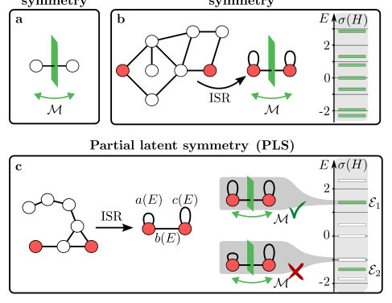
<figcaption class="paper-figure-caption"><b>Fig 1.</b> FIG. 1. Progression of symmetry concepts. a, Conventional mirror symmetry characterized</figcaption>
</figure>
<figure class="paper-figure-card">
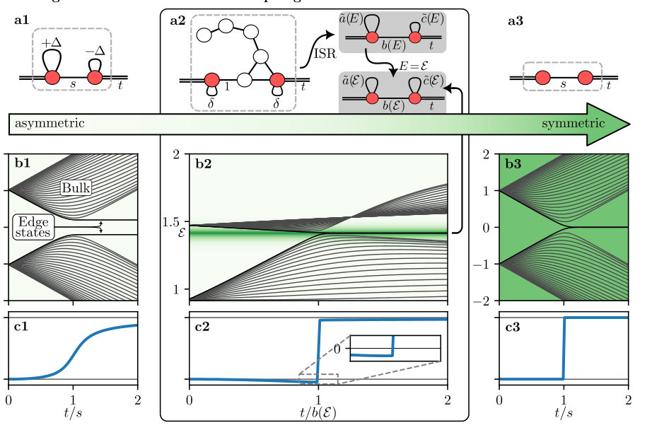
<figcaption class="paper-figure-caption"><b>Fig 2.</b> FIG. 2. Edge states in one-dimensional (topological) insulators. a1–a3, Schematic unit</figcaption>
</figure>
<figure class="paper-figure-card">
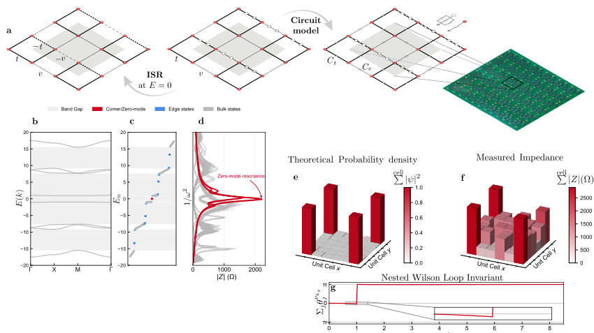
<figcaption class="paper-figure-caption"><b>Fig 3.</b> FIG. 3. Topological circuit realization and characterization. a, Schematic illustration of the</figcaption>
</figure>
</div>

<p><strong>Summary.</strong> This paper introduces the concept of 'partial latent symmetries,' allowing topological protection to be guaranteed by symmetry only at specific energy scales rather than globally. The authors demonstrate this concept using modified SSH and BBH models, showing that these weak symmetries can stabilize robust edge and corner states, which are experimentally verified in non-Hermitian circuits.</p>
<p><strong>Why it may be interesting.</strong> This work provides a generalized framework for topological physics, suggesting that physical systems can exhibit topological protection under much weaker symmetry constraints than previously assumed, which is highly relevant for designing novel quantum materials and circuits.</p>
<details>
<summary>Detailed structure</summary>
<p><strong>Main problem.</strong> The work addresses the limitation of traditional topological protection, which requires strong, global symmetries, by proposing a weaker concept: partial latent symmetries.</p>
<p><strong>Main result.</strong> Topological effects, such as robust edge and corner states, can be realized using partial latent symmetries, leading to topological invariants that are only approximately quantized.</p>
<p><strong>Method.</strong> The authors construct weak-symmetry versions of known models (like SSH and BBH) and analyze their properties using concepts like the Inverse Scattering Relation (ISR) and by testing robustness against disorder.</p>
<p><strong>Model / system.</strong> The study applies to lattice models, including the Su-Schrieffer-Heeger (SSH) and Benalcazar-Bernevig-Hughes (BBH) models, extended to Hermitian and non-Hermitian variants. These are realized both computationally (tight-binding Hamiltonians) and experimentally using electric circuits.</p>
<p><strong>Key observables.</strong> Edge states, corner-localized states, Zak phase (quantization), topological invariants (approximately quantized), and impedance spectra resonance.</p>
<p><strong>Important parameters / regimes.</strong> Energy scales ($E$) at which symmetry is required, disorder strength ($D$), and hopping/potential parameters ($t, v, \Delta$).</p>
<p><strong>Assumptions / limitations.</strong> The primary assumption is that partial latent symmetries can stabilize topological features, even if the corresponding invariants are only approximately quantized. The ISR requires pruning stub sites for well-defined calculations.</p>
<p><strong>Figures summary.</strong> Figures illustrate the progression from conventional to partial latent symmetries (Fig. 1), compare edge states in symmetric vs. partial latent cases (Fig. 2), show 2D realizations and corner modes (Fig. 3), and finally demonstrate the robustness of these states against disorder (Figs. S12, S13).</p>
<p><strong>Paper structure.</strong> The paper systematically introduces the concept of partial latent symmetry, applies it to 1D models (SSH), extends it to 2D models (BBH), and culminates in experimental realizations using non-Hermitian circuits to test robustness against disorder.</p>
</details>
<details>
<summary>Abstract</summary>
<p>Symmetries play a crucial role in protecting the topological phases of insulators, ensuring the robustness of their surface states against perturbations. Traditionally, these symmetries have to be obeyed by the system as a whole, which is a rather strong constraint. In this work, we demonstrate that topological effects can also be realized through a substantially weaker form of symmetry that we coin \emph{partial latent symmetries}. For these, invariance is required only at certain energy scales of an effective Hamiltonian, rather than for the object as a whole. Applying this idea, we construct weak-symmetry versions of the Su-Schrieffer-Heeger and Benalcazar-Bernevig-Hughes models. These weak-symmetry models behave in many aspects just like their conventional brethren---in particular, they host robust edge states---, though the corresponding topological invariants are only \emph{approximately} quantized. We conclude this work by experimentally realizing Hermitian and non-Hermitian versions of such approximate topological insulators and probe their edge states. Overall, given the ubiquity of symmetry in all areas of physics and engineering, we foresee our work to serve as a cornerstone for exploring how conventional, strong symmetry requirements can be replaced by weak-symmetry ones.</p>
</details>
<p><sub><a href="#top">↑ back to top</a></sub></p>

<p><a id="paper-2610.29301"></a></p>
<h3 id="collision-dynamics-of-topologically-pumped-solitons"><a href="http://arxiv.org/abs/2610.29301v1">Collision Dynamics of Topologically Pumped Solitons</a></h3>
<p><strong>Authors:</strong> Ning Mao, Guang-Can Guo, Xi-Wang Luo<br>
<strong>Type:</strong> theory · <strong>Category:</strong> other · <strong>PDF:</strong> <a href="https://arxiv.org/pdf/2610.29301v1">https://arxiv.org/pdf/2610.29301v1</a><br>
<strong>Analysis basis:</strong> full PDF text, analyzed in chunks
<strong>Topic relevance:</strong> <code>analog quantum simulation</code> <strong>2/5</strong> · <code>driven-dissipative phase transition</code> <strong>1/5</strong> · <code>interference shaping light</code> <strong>1/5</strong> · <code>methods for driven-dissipative</code> <strong>1/5</strong> · <code>non-equilibrium universality</code> <strong>1/5</strong></p>
<div class="figure-strip-hint">↔ Scroll figures horizontally</div>
<div class="paper-figures-scroll">
<figure class="paper-figure-card">
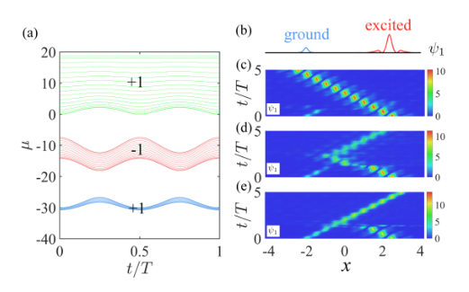
<figcaption class="paper-figure-caption"><b>Fig 1.</b> FIG. 1. Collisions of scalar solitons undergoing Thouless pumping. (a) Linear band spectrum over one pumping pe- riod, obtained from Eq. (1) with g11 = g12 = 0. The num- bers indicate the Chern numbers of the corresponding bands. (b) Schematic profiles of the initially solitons ˜ψg(x) around x = −2 and ˜ψe(x) around x = 2.5, associated with the lowest (blue) and second (red) bands, respectively. (c)-(e) Evolu- tion of the density |ψ1(x, t)|2 with initial ground-soliton peak densities maxx | ˜ψg(x)|2 = 3, 3.35, and 5, respectively. The excited-soliton peak density is maxx | ˜ψe(x)|2 = 10, with cor- responding chemical potential µ = −18 in the first gap. The interaction is g11 = −1 in...</figcaption>
</figure>
<figure class="paper-figure-card">
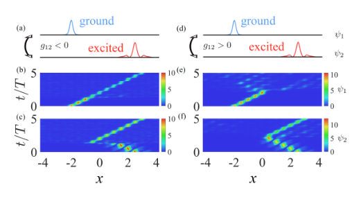
<figcaption class="paper-figure-caption"><b>Fig 2.</b> FIG. 2. Collisions of solitons in different components with (a)–(c) attractive interaction, g12 = −5, and (d)–(f) repulsive interaction, g12 = 5. (a), (d) Schematic initial configurations, with the ground-state soliton in ψ1(x, 0) = ˜ψg(x) and the excited-state soliton in ψ2(x, 0) = ˜ψe(x). (b), (e) Density evolution of |ψ1|2; (c), (f) density evolution of |ψ2|2. We fix the intracomponent interaction strengths at g11 = g22 = −1 and the peak densities of the two solitons are maxx | ˜ψg(x)|2 = maxx | ˜ψe(x)|2 = 10. The lattice parameters and driving rate are the same as in Fig. 1.</figcaption>
</figure>
<figure class="paper-figure-card">
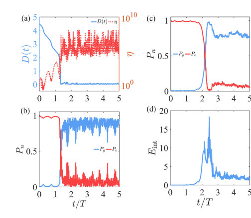
<figcaption class="paper-figure-caption"><b>Fig 3.</b> FIG. 3. Collision diagnostics for attractive and repulsive in- tercomponent interaction. (a) Core separation D and energy ratio η for attractive interaction. The small post-collision separation and large η are consistent with spatial and veloc- ity locking. (b), (c) Instantaneous first- and second-band weights (Pg and Pe) of the second component wave packet ψ2, for attractive and repulsive interaction, respectively. (d) Full-domain intercomponent interaction energy Eint for re- pulsive interaction. The rapid redistribution toward the first band in (c) occurs near the maximum of Eint.</figcaption>
</figure>
<figure class="paper-figure-card">
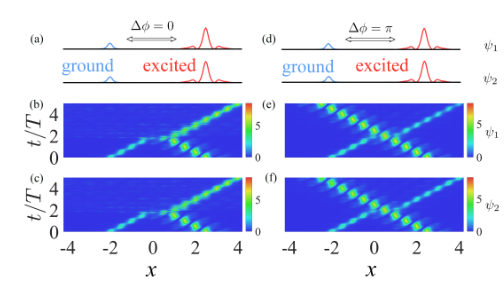
<figcaption class="paper-figure-caption"><b>Fig 4.</b> FIG. 4. Phase-controlled collisions between ground- and excited-band vector solitons. (a), (d) Initial configurations for ∆ϕ = 0 and ∆ϕ = π, respectively, with both wave packets present in each component. (b), (c) Density evolution of |ψ1|2</figcaption>
</figure>
<figure class="paper-figure-card">
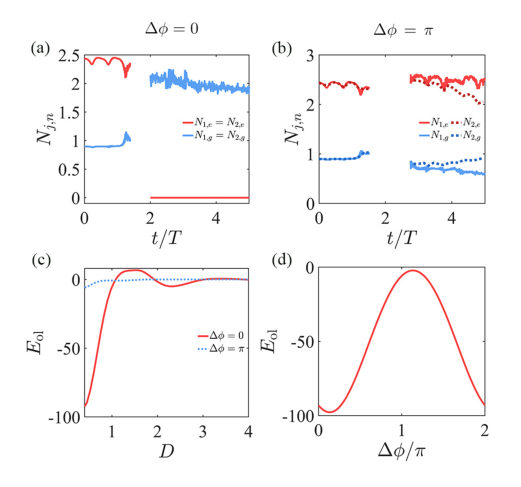
<figcaption class="paper-figure-caption"><b>Fig 5.</b> FIG. 5. Localized populations and effective interaction energy in vector-soliton collisions. (a), (b) Localized populations Nj,n, corresponding to particle numbers within the tracked spatial windows, for ∆ϕ = 0 and π, respectively. Blue and red denote the ground- and excited-state trajectories, while solid and dashed lines denote components j = 1 and 2. The localized populations are not well defined during the collision interval. For ∆ϕ = 0, the surviving packet is tracked along the ground-state trajectory, with N1,e and N2,e approaching zero after the collision. For ∆ϕ = π, both outgoing pack- ets retain nonzero localized populations. (c) Effective overlap energy Eol versus separation D...</figcaption>
</figure>
</div>

<p><strong>Summary.</strong> This paper explores how the collision dynamics of solitons are manipulated when the underlying system undergoes topological pumping. By analyzing single-component, intercomponent, and vector soliton collisions, the authors demonstrate that the final state—whether capture or re-separation—is dictated by precise control parameters like initial intensity imbalance and relative phase. This highlights the rich interplay between nonlinearity, topology, and quantum control in wave systems.</p>
<p><strong>Why it may be interesting.</strong> This work bridges nonlinear wave physics (solitons) with topological concepts (Chern numbers) in a controlled, tunable manner, offering new control knobs (phase, interaction strength) for wave transport.</p>
<details>
<summary>Detailed structure</summary>
<p><strong>Main problem.</strong> The paper investigates the complex dynamics of soliton collisions when the system is subjected to topological pumping mechanisms.</p>
<p><strong>Main result.</strong> The collision outcome is highly controllable by initial conditions, specifically the relative initial intensities, the sign of the intercomponent interaction, and the internal relative phase for vector solitons.</p>
<p><strong>Method.</strong> The study relies on numerical simulations of coupled nonlinear Schrödinger equations, employing advanced diagnostics like core tracking, energy ratio analysis, and overlap energy calculations.</p>
<p><strong>Model / system.</strong> The model involves solitons in a driven bichromatic lattice, described by coupled nonlinear Schrödinger equations, exhibiting topological pumping linked to Chern numbers.</p>
<p><strong>Key observables.</strong> Post-collision displacement (Q_out), core separation D(t), energy ratio eta(t), and overlap energy E_ol(D, Δθ).</p>
<p><strong>Important parameters / regimes.</strong> Initial relative intensities, intercomponent interaction strength (attractive vs. repulsive), and the internal relative phase (Δθ) for vector solitons.</p>
<p><strong>Assumptions / limitations.</strong> The analysis utilizes approximations such as treating cores as rigid wave packets for kinetic energy estimation.</p>
<p><strong>Figures summary.</strong> Figures illustrate linear band spectra with Chern numbers, density evolution for different collision types (intra/inter), and phase-dependent collision outcomes for vector solitons.</p>
<p><strong>Paper structure.</strong> The paper progresses from establishing the context of topological pumping to analyzing single-component collisions, then detailing intercomponent interactions based on attraction/repulsion, and finally focusing on the phase control in vector soliton collisions.</p>
</details>
<details>
<summary>Abstract</summary>
<p>Soliton pumping enables controlled transport of localized wave packets through the interplay between nonlinearity and band topology. Interactions between such wave packets provide an additional means to manipulate their localization and subsequent motion. Here, we investigate collisions of solitons in a driven bichromatic lattice, where solitons associated with bands of opposite Chern numbers are pumped toward one another. For intracomponent collisions, the soliton that dominates the collision survives as a localized outgoing wave packet, while the weaker one can lose its distinct localized identity. For intercomponent collisions, attractive interaction produces spatial locking, whereas repulsive interaction induces redistribution toward the lowest band and reverses the motion of the initially excited-band wave packet. Remarkably, for collisions between vector solitons with comparable initial intensities, the difference between their internal relative phases controls the collision outcome, favoring capture for in-phase preparation and re-separation for out-of-phase preparation. These results connect nonlinear scattering with subsequent topological pumping and identify initial intensity, intercomponent interaction, and relative phase as control parameters for manipulating localized transport within the same pumping protocol.</p>
</details>
<p><sub><a href="#top">↑ back to top</a></sub></p>

<p><a id="paper-2610.29081"></a></p>
<h3 id="the-spectroscopic-atlas-of-excitonic-complexes-in-hbn-encapsulated-s-tmd-monolayers-from-excitons-to-oxcitons-and-beyond"><a href="http://arxiv.org/abs/2610.29081v1">The Spectroscopic Atlas of Excitonic Complexes in hBN-Encapsulated S-TMD Monolayers: From Excitons to Oxcitons and Beyond</a></h3>
<p><strong>Authors:</strong> Maciej R. Molas<br>
<strong>Type:</strong> both · <strong>Category:</strong> other · <strong>PDF:</strong> <a href="https://arxiv.org/pdf/2610.29081v1">https://arxiv.org/pdf/2610.29081v1</a><br>
<strong>Analysis basis:</strong> full PDF text, analyzed in chunks
<strong>Topic relevance:</strong> <code>analog quantum simulation</code> <strong>2/5</strong> · <code>driven-dissipative phase transition</code> <strong>1/5</strong> · <code>quantum measurements</code> <strong>1/5</strong> · <code>quantum optics experiment</code> <strong>1/5</strong></p>
<div class="figure-strip-hint">↔ Scroll figures horizontally</div>
<div class="paper-figures-scroll">
<figure class="paper-figure-card">
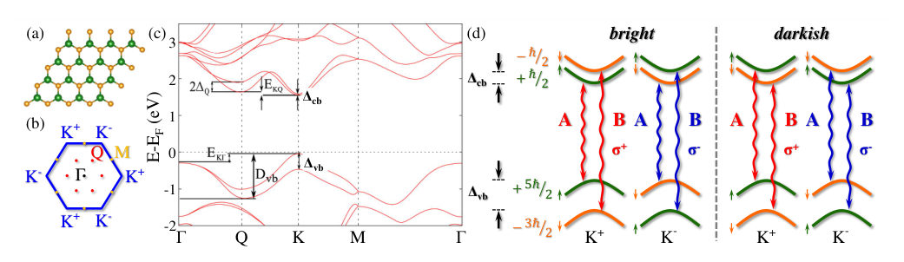
<figcaption class="paper-figure-caption"><b>Fig 1.</b> FIG. 1. Electronic structure and optical selection rules of Mo- and W-based S-TMD MLs. (a) Top view of the crystal structure of an S-TMD ML, showing the hexagonal arrangement of the transition-metal and chalcogen atoms. (b) Hexagonal Brillouin zone showing the inequivalent K+ and K−valleys, the six Q valleys located along the Γ-K directions, and the high-symmetry Γ and M points. (c) Representative electronic band dispersion along the Γ-Q-K-M-Γ direction, including SO coupling. Relevant band-edge energy differences and the CB and VB spin splittings are indicated. Panel (c) is adapted from Ref. [45] under a Creative Commons Attribution 3.0 (CC BY 3.0) license. (d) Schematic band-edge...</figcaption>
</figure>
<figure class="paper-figure-card">
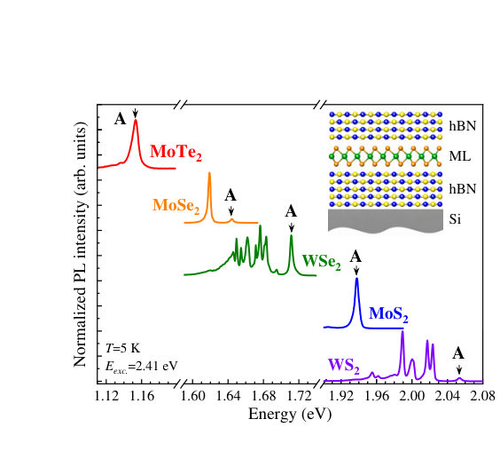
<figcaption class="paper-figure-caption"><b>Fig 2.</b> FIG. 2. Low-temperature photoluminescence (PL) spectra of hBN-encapsulated MoTe2, MoSe2, WSe2, MoS2, and WS2 MLs measured at T = 5 K using an excitation energy of Eexc = 2.41 eV. The spectra are normalized and vertically offset for clarity. Black arrows indicate the emission energy of the neutral A exciton in each material. The inset schemat- ically illustrates the hBN/S-TMD ML/hBN structure on a Si substrate. The spectra were measured by the author using samples prepared by Dr Karol Nogajewski and Dr Miroslav Bartoš.</figcaption>
</figure>
<figure class="paper-figure-card">
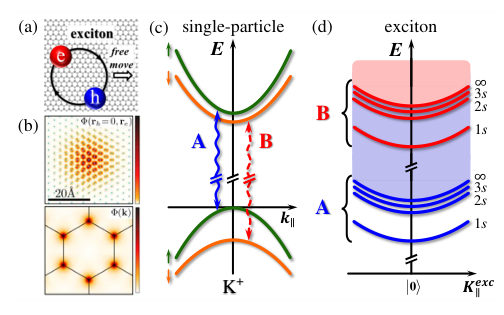
<figcaption class="paper-figure-caption"><b>Fig 3.</b> FIG. 3. Schematic representation of excitons and their Ry- dberg series in S-TMD MLs. (a) Schematic illustration of a Coulomb-bound e-h pair forming an exciton whose center of mass can move freely within the ML plane. (b) Calculated A-exciton wave function in ML MoS2: the upper panel shows its real-space distribution with the hole position fixed at the center, whereas the lower panel shows the corresponding dis- tribution in momentum space, with dominant contributions around the K± valleys. Panel (b) is adapted from Ref. [71] under a Creative Commons Attribution 4.0 (CC BY 4.0) li- cense. (c) Schematic single-particle band structure at the K+</figcaption>
</figure>
<figure class="paper-figure-card">
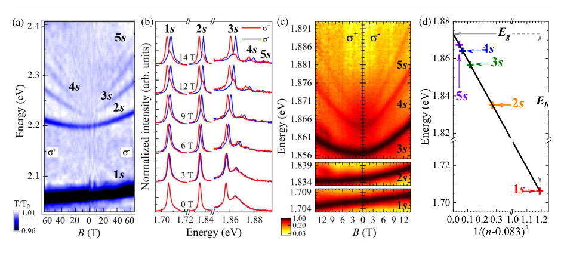
<figcaption class="paper-figure-caption"><b>Fig 4.</b> FIG. 4. Experimental observation and analysis of excitonic Rydberg states in hBN-encapsulated S-TMD MLs. (a) False-color map of the circularly polarized transmission spectra of a WS2 ML measured in magnetic fields up to 65 T, revealing the 1s, 2s, 3s, 4s, and 5s states of the neutral A-exciton Rydberg series. Panel (a) adapted from Ref. [25] under a Creative Commons Attribution 4.0 (CC BY 4.0) license. (b) Helicity-resolved (σ+ and σ−) PL spectra of an hBN-encapsulated WSe2 ML at selected magnetic fields up to 14 T, showing the field evolution of the 1s-5s excitonic states. (c) Corresponding false-color representation of the magneto-PL spectra, highlighting the progressively stronger...</figcaption>
</figure>
<figure class="paper-figure-card">
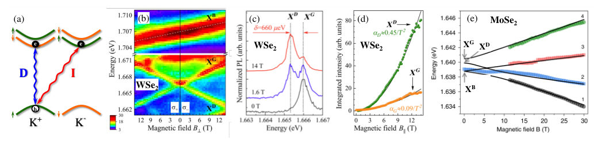
<figcaption class="paper-figure-caption"><b>Fig 5.</b> FIG. 5. Neutral dark excitons and their magneto-optical response in S-TMD MLs. (a) Schematic representation of an intravalley spin-forbidden exciton (D) and an intervalley momentum-dark exciton (I), in which the electron and hole occupy the same and opposite K valleys, respectively. (b) False-color magneto-PL map of an hBN-encapsulated WSe2 ML in a perpendicular magnetic field B⊥, showing the bright exciton XB and the lower-energy grey and dark excitons, XG and XD. (c) Selected PL spectra illustrating the magnetic-field evolution of the XG-XD doublet and its zero-field splitting δ ≈660 µeV. (d) Integrated PL intensities of XD and XG as a function of the in-plane magnetic field B∥,...</figcaption>
</figure>
</div>

<p><strong>Summary.</strong> This review provides a comprehensive, spectroscopy-based guide to characterizing the complex hierarchy of excitonic complexes in hBN-encapsulated TMD monolayers. It emphasizes that reliable identification requires combining multiple experimental measurements—such as PL, absorption, and external field tuning—rather than just measuring transition energies. This framework is crucial for engineering and understanding quantum phenomena in 2D semiconductors.</p>
<p><strong>Why it may be interesting.</strong> The detailed analysis of excitonic complexes, Rydberg states, and many-body physics in 2D materials provides a rich platform for studying strongly correlated electron physics and open quantum systems dynamics.</p>
<details>
<summary>Detailed structure</summary>
<p><strong>Main problem.</strong> To establish a spectroscopy-oriented framework for understanding and identifying the complex hierarchy of excitonic complexes in hBN-encapsulated S-TMD monolayers.</p>
<p><strong>Main result.</strong> The identification of these complex excitonic states requires combining multiple experimental observables (e.g., PL, absorption, gating, magnetic fields) rather than relying on transition energy alone.</p>
<p><strong>Method.</strong> The review synthesizes knowledge from various spectroscopic techniques, including photoluminescence, absorption spectroscopy, and external field/temperature dependence measurements.</p>
<p><strong>Model / system.</strong> The system is semiconducting transition-metal dichalcogenide (S-TMD) monolayers (e.g., MoS2, WS2) encapsulated by hexagonal boron nitride (hBN). The physics involves a rich hierarchy of many-body excitonic states (excitons, oxcitons, charged excitons) governed by strong Coulomb interactions.</p>
<p><strong>Key observables.</strong> Bright/dark exciton energies, A-B exciton separation ($\Delta_{AB}$), Rydberg series spacing, and spectral response to external fields.</p>
<p><strong>Important parameters / regimes.</strong> Low temperatures, electrostatic gating voltages, magnetic field strengths, and alloying compositions.</p>
<p><strong>Assumptions / limitations.</strong> The primary assumption is that the optical response can be systematically organized around experimentally accessible spectroscopic fingerprints.</p>
<p><strong>Figures summary.</strong> Figures illustrate the electronic structure, optical selection rules in the hexagonal Brillouin zone (K± valleys), and the energy splittings between different exciton types (A and B excitons).</p>
<p><strong>Paper structure.</strong> The paper progresses by first establishing the physical system and the role of hBN encapsulation, then detailing the various types of excitonic complexes, and finally presenting a comprehensive guide based on combined experimental diagnostics.</p>
</details>
<details>
<summary>Abstract</summary>
<p>Hexagonal boron nitride (hBN) encapsulation has transformed the optical spectroscopy of semiconducting transition-metal dichalcogenide monolayers (MLs) by suppressing extrinsic disorder and enabling the resolution of an increasingly complex hierarchy of excitonic states. This Review provides a spectroscopy-oriented framework for understanding and identifying excitonic complexes in hBN-encapsulated Mo- and W-based MLs and their alloys. The discussion covers bright and dark excitons, Rydberg states, charged excitons, biexcitons, phonon-assisted replicas, and higher-order Fermi-sea many-body states, including hexcitons and oxcitons, with an emphasis on the experimental signatures that distinguish them. Particular attention is given to the combined use of photoluminescence and absorption-related spectroscopy, electrostatic gating, polarization analysis, excitation-power and temperature dependences, magnetic fields, and time-resolved measurements to establish microscopic assignments. The role of alloying as an additional degree of freedom for engineering the excitonic hierarchy, spin-valley configuration, and magneto-optical response is also highlighted. By organizing the rapidly expanding phenomenology around experimentally accessible fingerprints rather than individual material systems, this Review aims to provide a practical and broadly applicable guide for identifying, comparing, and engineering excitonic states in high-quality two-dimensional semiconductors.</p>
</details>
<p><sub><a href="#top">↑ back to top</a></sub></p>

<p><a id="paper-2610.29644"></a></p>
<h3 id="geometrization-of-continuum-mechanics-and-nonequilibrium-thermodynamics-heat-conduction"><a href="http://arxiv.org/abs/2610.29644v1">Geometrization of continuum mechanics and nonequilibrium thermodynamics: Heat conduction</a></h3>
<p><strong>Authors:</strong> Ilya Peshkov<br>
<strong>Type:</strong> theory · <strong>Category:</strong> statistical mechanics · <strong>PDF:</strong> <a href="https://arxiv.org/pdf/2610.29644v1">https://arxiv.org/pdf/2610.29644v1</a><br>
<strong>Analysis basis:</strong> full PDF text, analyzed in chunks
<strong>Topic relevance:</strong> <code>Keldysh / 2PI / non-Gaussian methods</code> <strong>2/5</strong> · <code>correlated / nonlocal dissipation</code> <strong>1/5</strong> · <code>non-equilibrium universality</code> <strong>1/5</strong></p>
<div class="figure-strip-hint">↔ Scroll figures horizontally</div>
<div class="paper-figures-scroll">
<figure class="paper-figure-card">
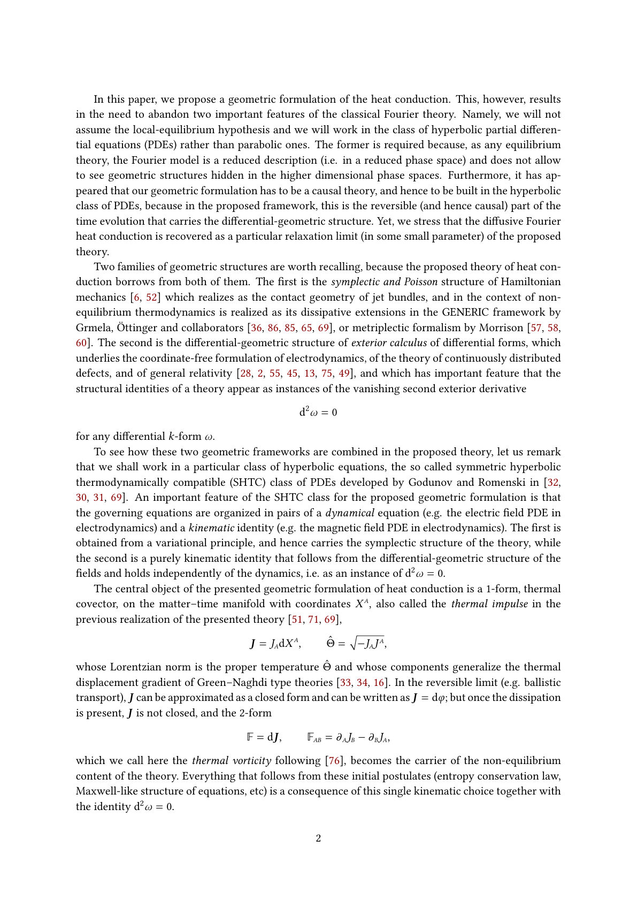
<figcaption class="paper-figure-caption"><b>Fig 1.</b> Low-resolution page preview, page 2</figcaption>
</figure>
<figure class="paper-figure-card">
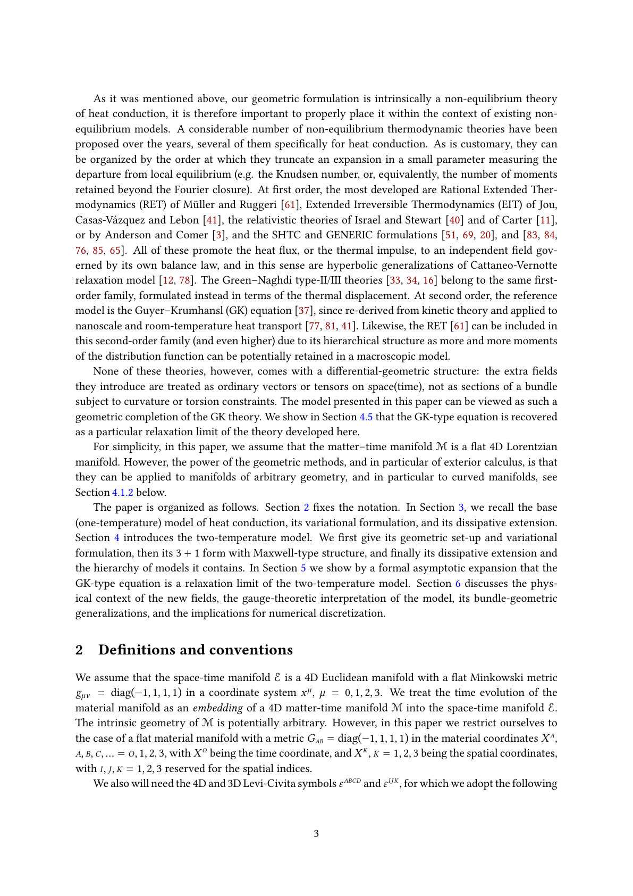
<figcaption class="paper-figure-caption"><b>Fig 2.</b> Low-resolution page preview, page 3</figcaption>
</figure>
<figure class="paper-figure-card">
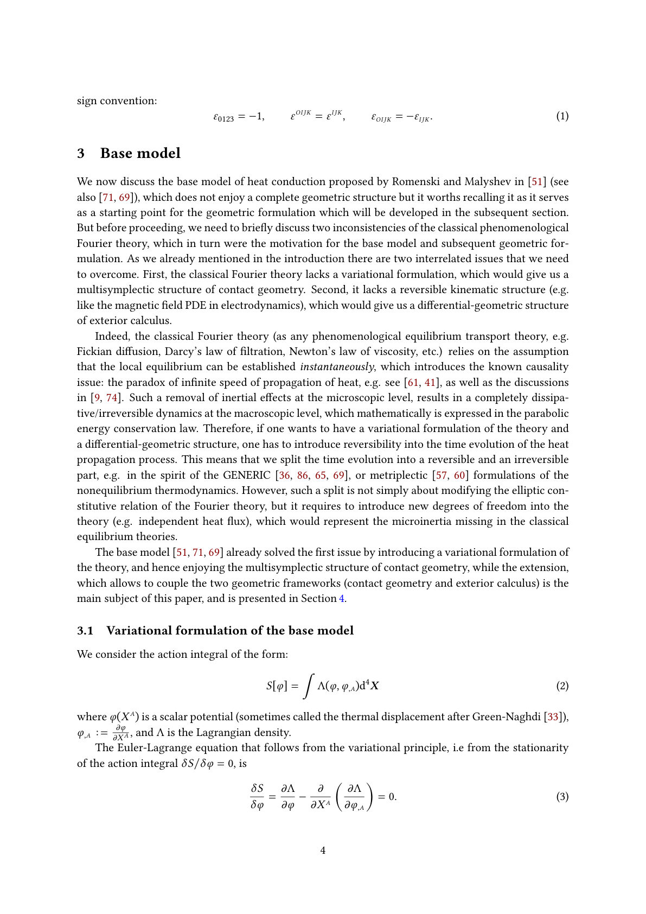
<figcaption class="paper-figure-caption"><b>Fig 3.</b> Low-resolution page preview, page 4</figcaption>
</figure>
<figure class="paper-figure-card">
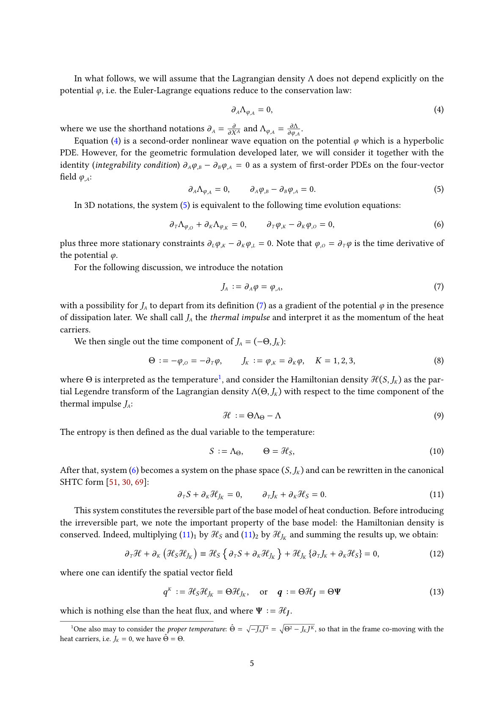
<figcaption class="paper-figure-caption"><b>Fig 4.</b> Low-resolution page preview, page 5</figcaption>
</figure>
<figure class="paper-figure-card">
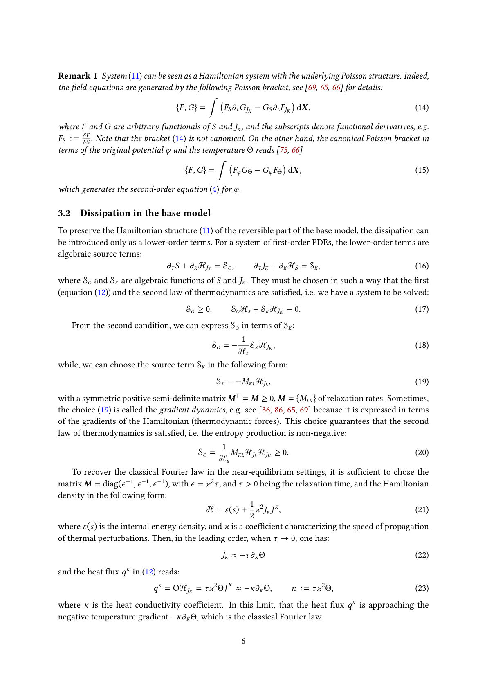
<figcaption class="paper-figure-caption"><b>Fig 5.</b> Low-resolution page preview, page 6</figcaption>
</figure>
</div>

<p><strong>Summary.</strong> This paper proposes a novel geometric framework for non-equilibrium heat conduction by employing differential forms and variational principles. It constructs a two-temperature model whose field equations mimic those of electromagnetism, providing a mathematically consistent extension beyond classical Fourier theory. The framework successfully recovers known theories like Guyer-Krumhansl while incorporating non-equilibrium effects via geometric terms.</p>
<p><strong>Why it may be interesting.</strong> The rigorous geometric approach to non-equilibrium thermodynamics, particularly the connection between dissipation, curvature, and gauge theory, provides advanced mathematical tools applicable to open quantum systems and non-equilibrium dynamics.</p>
<details>
<summary>Detailed structure</summary>
<p><strong>Main problem.</strong> To develop a rigorous geometric formulation for non-equilibrium heat conduction that overcomes the limitations of classical Fourier theory.</p>
<p><strong>Main result.</strong> The model yields a non-equilibrium two-temperature description whose field equations resemble Maxwell's equations, and it correctly reduces to the Guyer-Krumhansl type theory in the relaxation limit.</p>
<p><strong>Method.</strong> It combines the variational structure of Symmetric Hyperbolic Thermodynamically Compatible (SHTC) equations with the exterior calculus of differential forms.</p>
<p><strong>Model / system.</strong> The system is heat conduction on a four-dimensional matter-time manifold, modeled using a thermal impulse one-form and a small-scale thermal impulse two-form to capture non-equilibrium effects.</p>
<p><strong>Key observables.</strong> Thermal impulse one-form, small-scale thermal impulse, four-thermal vorticity, and the heat flux vector.</p>
<p><strong>Important parameters / regimes.</strong> Relaxation time ($  au$), transverse and longitudinal length scales, and the two temperatures characterizing the system.</p>
<p><strong>Assumptions / limitations.</strong> The theory requires abandoning the local-equilibrium hypothesis and working with hyperbolic PDEs, although it is built upon a variational principle.</p>
<p><strong>Paper structure.</strong> The paper progresses by establishing the geometric framework, deriving the non-equilibrium two-temperature model with a Maxwell-like structure, demonstrating the recovery of the Guyer-Krumhansl theory in the asymptotic limit, and concluding with discussions on gauge theory and numerical methods.</p>
</details>
<details>
<summary>Abstract</summary>
<p>We propose a geometric formulation of non-equilibrium heat conduction. It combines the variational (Hamiltonian) structure of symmetric hyperbolic thermodynamically compatible (SHTC) equations with the exterior calculus of differential forms. The central object is the thermal impulse one-form on the four-dimensional matter-time manifold. Its time component is the temperature, and for reversible (ballistic) heat transport it is the exact differential of a scalar potential (i.e. it is holonomic). Non-equilibrium effects are described by a second one-form, the small-scale thermal impulse, which is not required to be exact. Its time component is a fluctuating temperature, and its exterior derivative, the four-thermal vorticity, satisfies a Bianchi-type kinematic identity. The variational principle together with this identity yields a non-equilibrium two-temperature model. Its field equations have the same structure as Maxwell's equations in a medium, with the thermal impulse field, the thermal vorticity field and a thermal Poynting vector contributing to the heat flux. Dissipation is introduced through relaxation terms that conserve the total energy and produce entropy. A formal asymptotic analysis shows that, in the relaxation limit, the model reduces to a Guyer-Krumhansl-type heat conduction with independent transverse and longitudinal length scales. The transverse nonlocal term comes from the spatial non-holonomy of the small-scale thermal impulse, while the longitudinal term comes from its non-holonomy in time, i.e. from the relaxation of the fluctuating temperature. We also discuss the gauge-theoretic interpretation of the model. Its kinematics is that of an abelian gauge theory, while the local gauge symmetry is explicitly broken by the existence of two temperatures. Finally, we discuss the consequences of the geometric structure for structure-preserving numerical methods.</p>
</details>
<p><sub><a href="#top">↑ back to top</a></sub></p>

<p><a id="paper-2610.29486"></a></p>
<h3 id="interaction-induced-bloch-geometry-and-transverse-thermoelectric-transport"><a href="http://arxiv.org/abs/2610.29486v1">Interaction-Induced Bloch Geometry and Transverse Thermoelectric Transport</a></h3>
<p><strong>Authors:</strong> Heng-Yu Di, YuanDong Wang, Zhen-Gang Zhu, Gang Su<br>
<strong>Type:</strong> theory · <strong>Category:</strong> strongly correlated electrons · <strong>PDF:</strong> <a href="https://arxiv.org/pdf/2610.29486v1">https://arxiv.org/pdf/2610.29486v1</a><br>
<strong>Analysis basis:</strong> full PDF text, analyzed in chunks
<strong>Topic relevance:</strong> <code>Keldysh / 2PI / non-Gaussian methods</code> <strong>2/5</strong> · <code>analog quantum simulation</code> <strong>2/5</strong></p>
<div class="figure-strip-hint">↔ Scroll figures horizontally</div>
<div class="paper-figures-scroll">
<figure class="paper-figure-card">
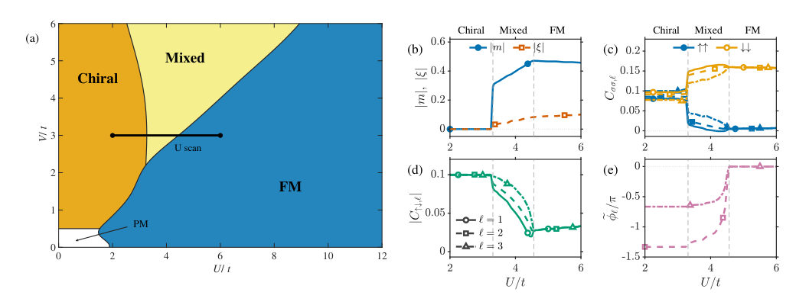
<figcaption class="paper-figure-caption"><b>Fig 1.</b> FIG. 1. Classification of self-consistent states and their order parameters at n = 1.5 and kBT/t = 0.01, without bare spin–orbit coupling or a Zeeman field. (a) The U–V map classified in a fixed spin basis by the z-component magnetization m = n↑−n↓ and chiral bond order: the chiral region has chiral bond order with m = 0, the ferromagnetic (FM) region has finite m without chiral bond order, the mixed region has both, and the remaining weak-coupling region is labeled paramagnetic metal (PM). The classification criteria are given in Appendix F. The curves in (a) schematically indicate the phase boundaries of the HF solutions. The remaining panels show the order parameters of the chiral,...</figcaption>
</figure>
<figure class="paper-figure-card">
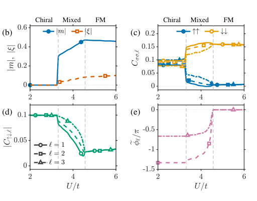
<figcaption class="paper-figure-caption"><b>Fig 2.</b> Fig. 1(a) shows the U–V phase diagram. In the fixed spin basis, we classify the solutions using the z- component magnetization m and the relative phases of the spin-flip bond fields Cℓ= C↑↓,ℓ. Chiral bond or- der has at least one pair of nonzero bond fields with a relative phase different from 0 and π. The ferromagnetic (FM) state has m ̸= 0 without chiral bond order, whereas the chiral state has m = 0 and nontrivial relative bond</figcaption>
</figure>
<figure class="paper-figure-card">
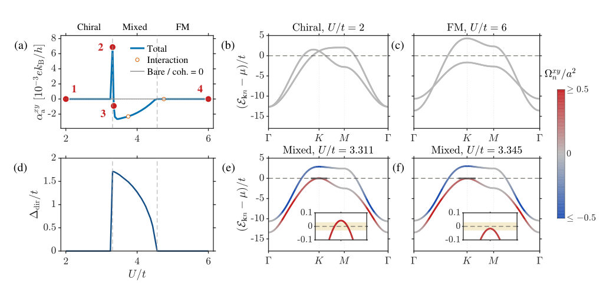
<figcaption class="paper-figure-caption"><b>Fig 3.</b> FIG. 2. Anomalous thermoelectric response and band reconstruction along the fixed-V/t = 3 interaction scan at n = 1.5 and kBT/t = 0.01. (a) The anomalous transverse coefficient αxy a and its bare, coherence, and interaction-induced contributions. The total response coincides with the interaction-induced contribution. Red markers identify the four selected states. (b) Band spectrum of the chiral state (point 1). (c) Band spectrum of the FM state (point 4). (d) The direct band gap ∆dir/t across the Brillouin zone. (e) Band spectrum of the mixed state before the response sign reversal (point 2). (f) Band spectrum of the mixed state after the response sign reversal (point 3). The band spectra...</figcaption>
</figure>
<figure class="paper-figure-card">
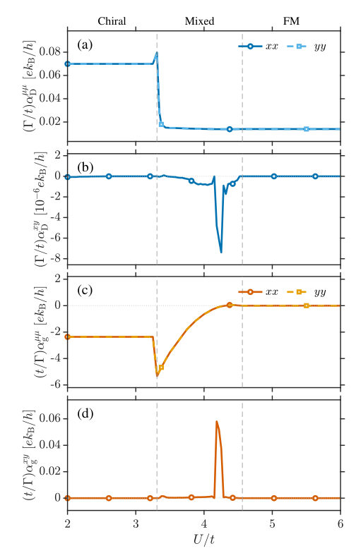
<figcaption class="paper-figure-caption"><b>Fig 4.</b> FIG. 3. Interaction dependence of the Drude and quantum- metric thermoelectric contributions at n = 1.5, kBT/t = 0.01, fixed V/t = 3, and phenomenological broadening Γ/t = 0.1. (a) Longitudinal and (b) symmetric transverse Drude coeffi- cients multiplied by Γ/t. (c) Longitudinal and (d) symmetric transverse quantum-metric coefficients multiplied by t/Γ. In the figure labels, D and g denote the Drude and quantum- metric contributions, respectively.</figcaption>
</figure>
<figure class="paper-figure-card">
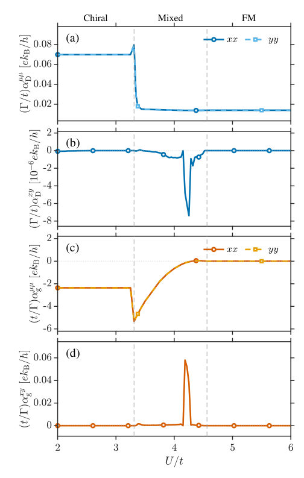
<figcaption class="paper-figure-caption"><b>Fig 5.</b> Fig. 2(d) shows the direct band gap, ∆dir = mink[Ek,+ −Ek,−]. The separation opens upon enter- ing the mixed state and closes again in the directionally equivalent, phase-aligned FM limit. The spectrum of the chiral state in Fig. 2(b) has a Dirac-like near-touching at K above the Fermi level. The spin directions of the Bloch</figcaption>
</figure>
</div>

<p><strong>Summary.</strong> This theoretical work analyzes how electron-electron interactions modify the electronic band structure geometry, leading to changes in thermoelectric transport. Using the Hartree-Fock approximation and a density-matrix formalism, the authors decompose the anomalous response into contributions from the Drude, quantum-metric, and Berry-curvature terms. The results demonstrate that interactions generate measurable geometric properties that dictate the material's thermoelectric response.</p>
<p><strong>Why it may be interesting.</strong> While focused on transport, the explicit treatment of interaction-induced geometric terms (Berry curvature, quantum metric) and the use of mean-field theory for correlated systems connects to understanding emergent quantum geometric effects in strongly interacting quantum materials.</p>
<details>
<summary>Detailed structure</summary>
<p><strong>Main problem.</strong> The paper investigates how electron-electron interactions reconstruct Bloch wave functions, thereby altering the geometry of the electronic bands and the resulting transverse thermoelectric response.</p>
<p><strong>Main result.</strong> Interactions generate Berry curvature and a quantum metric, which contribute distinct, quantifiable terms to the anomalous thermoelectric transport, which can be analyzed via symmetry constraints.</p>
<p><strong>Method.</strong> The linear thermoelectric response is derived using the thermal length-gauge density-matrix approach within the Hartree-Fock (HF) approximation.</p>
<p><strong>Model / system.</strong> The analysis uses a tight-binding model extended to include electron-electron interactions, specifically illustrated with self-consistent calculations on the triangular-lattice extended Hubbard model.</p>
<p><strong>Key observables.</strong> Thermoelectric response tensor ($\alpha_{\mu
u}$), Drude contribution, quantum-metric contribution, and Berry-curvature contribution.</p>
<p><strong>Important parameters / regimes.</strong> Broadening parameter ($\Gamma$), interaction strength ($V$), and symmetry constraints (spatial inversion, time-reversal).</p>
<p><strong>Assumptions / limitations.</strong> The analysis employs the relaxation-time approximation (RTA) for broadening and relies on mean-field eigenstates derived from the HF approximation.</p>
<p><strong>Figures summary.</strong> The notes mention symmetry constraints (Table I &amp; II) and specific results from the triangular-lattice model (Appendix F), but no explicit figure descriptions are provided.</p>
<p><strong>Paper structure.</strong> The paper proceeds by deriving the linear response using the density matrix approach, decomposing the response into intra- and interband parts, separating the interband response into symmetric and antisymmetric channels, and finally analyzing the contributions of the bare, coherence, and interaction-induced terms.</p>
</details>
<details>
<summary>Abstract</summary>
<p>Electron--electron interactions can reconstruct Bloch wave functions, changing their geometry and the associated thermoelectric response. We derive the linear thermoelectric response within the Hartree--Fock (HF) approximation using the thermal length-gauge density-matrix approach, resolving Drude, symmetric quantum-metric, and antisymmetric Berry-curvature contributions. In a noninteracting Bloch eigenbasis, we separate the reconstructed Berry connection into the noninteracting connection and an interaction connection. This gives bare, coherence, and interaction-connection contributions to the anomalous thermoelectric response. We determine the constraints imposed by spatial inversion, rotational, time-reversal, and combined symmetries on the three transport channels. In the relaxation-time approximation, the leading weak-broadening behavior is $Γ^{-1}$ for the Drude contribution, $Γ$ for the quantum-metric contribution, and $Γ^0$ for the Berry-curvature contribution. The interband scalings apply away from band degeneracies. Self-consistent calculations for the triangular-lattice extended Hubbard model illustrate how interactions generate Berry curvature and a quantum metric, change the symmetry of the system, and thereby contribute to transverse thermoelectric transport.</p>
</details>
<p><sub><a href="#top">↑ back to top</a></sub></p>

<p><a id="paper-2610.29884"></a></p>
<h3 id="phenotype-structured-nonlocal-aggregation-models-i-signal-production-and-response"><a href="http://arxiv.org/abs/2610.29884v1">Phenotype-structured nonlocal aggregation models I: signal production and response</a></h3>
<p><strong>Authors:</strong> Thomas Jun Jewell, Andrew L. Krause, Philip K. Maini, Eamonn A. Gaffney<br>
<strong>Type:</strong> theory · <strong>Category:</strong> statistical mechanics · <strong>PDF:</strong> <a href="https://arxiv.org/pdf/2610.29884v1">https://arxiv.org/pdf/2610.29884v1</a><br>
<strong>Analysis basis:</strong> full PDF text, analyzed in chunks
<strong>Topic relevance:</strong> <code>Frenkel-Kontorova</code> <strong>1/5</strong> · <code>Keldysh / 2PI / non-Gaussian methods</code> <strong>1/5</strong> · <code>analog quantum simulation</code> <strong>1/5</strong> · <code>correlated / nonlocal dissipation</code> <strong>1/5</strong> · <code>driven-dissipative phase transition</code> <strong>1/5</strong> · <code>methods for driven-dissipative</code> <strong>1/5</strong> · <code>non-equilibrium universality</code> <strong>1/5</strong></p>
<div class="figure-strip-hint">↔ Scroll figures horizontally</div>
<div class="paper-figures-scroll">
<figure class="paper-figure-card">
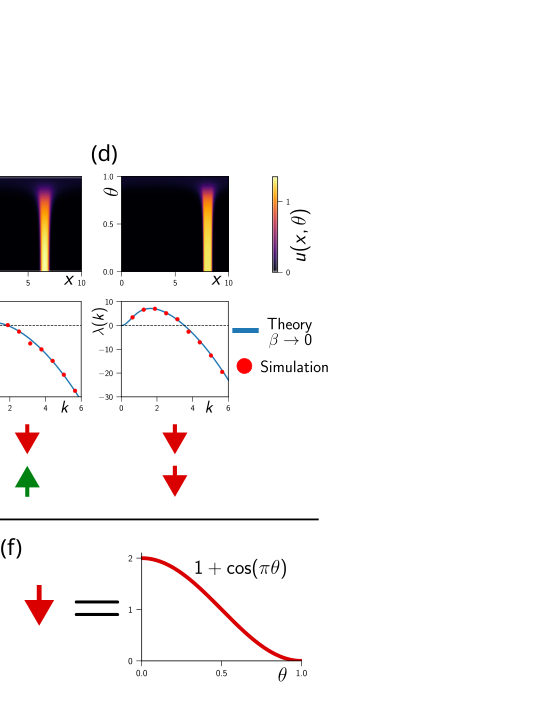
<figcaption class="paper-figure-caption"><b>Fig 1.</b> Figure 1. Numerical simulations in the slow phenotypic switching regime (β = 0.0001). Simulations with β = 0 are visually indistinguishable (not shown). Each of the columns (a)–(d) corresponds to a different combination of increasing or decreasing response and signal functions. For each case, the top panel shows the late-time (t = 500) solution u(x, θ), with physical space x on the horizontal axis and phenotype θ on the vertical axis. In (a), all phenotypes above the green dashed horizontal line would form patterns in isolation. In (b), the green and red dashed horizontal lines mark the lower and upper thresholds, respectively, so that only phenotypes between the two thresholds would form...</figcaption>
</figure>
<figure class="paper-figure-card">
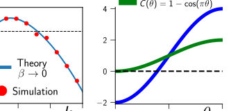
<figcaption class="paper-figure-caption"><b>Fig 2.</b> Figure 2. Numerical simulation illustrating out-of-phase aggregation when the response function changes sign. The response and signal functions are shown in the third panel, with B(θ) = 1 −3 cos(πθ), so that phenotypes with θ ≲0.392 have negative response, thereby repelling from all phenotypes, including themselves. The first panel shows the late-time (t = 500) solution u(x, θ), while the second compares the dispersion relation predicted by (4.3) and (4.6) with that inferred directly from the simulation using dynamic mode decomposition. In the first panel, phenotypes below the green dashed line would not form patterns in isolation, while those below the cyan dashed line are additionally...</figcaption>
</figure>
<figure class="paper-figure-card">
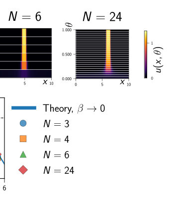
<figcaption class="paper-figure-caption"><b>Fig 3.</b> Figure 3. Results from simulations using the same parameters as Figure 1(a), but with the phenotype discretisation coarsened from N = 50 to N = 3, N = 4, N = 6, and N = 24. Gray horizontal lines delimit the different phenotype classes. Each heatmap in (a) shows the late-time (t = 500) solution u(x, θ). Differences in aggregate location arise only from different realisations of the random initial conditions, since the periodic system is translationally invariant and therefore has no preferred location. Panel (b) compares the dispersion relation predicted by (4.3) with that inferred directly from each simulation using dynamic mode decomposition. The close agreement between the theory and the...</figcaption>
</figure>
<figure class="paper-figure-card">
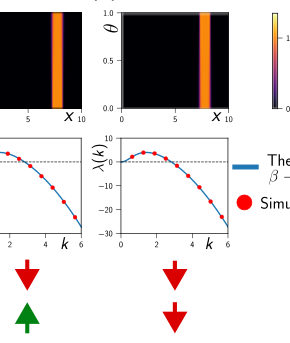
<figcaption class="paper-figure-caption"><b>Fig 4.</b> Figure 4. Numerical simulations in the fast phenotypic switching regime (β = 50). Each of the columns (a)–(d) corresponds to a different combination of increasing (1 −cos(πθ)) or decreasing (1 + cos(πθ)) response and signal functions, indicated by the icons below each column. For each case, the top panel shows the late-time (t = 500) solution u(x, θ), with physical space x on the horizontal axis and phenotype θ on the vertical axis. In (a), all phenotypes above the green dashed horizontal line would form patterns in isolation. In (b), the green and red dashed horizontal lines mark the lower and upper thresholds, respectively, so that only phenotypes between the two thresholds would form...</figcaption>
</figure>
<figure class="paper-figure-card">
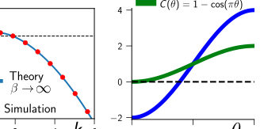
<figcaption class="paper-figure-caption"><b>Fig 5.</b> Figure 5. Numerical simulation illustrating in-phase aggregation under fast phenotypic switching (β = 50) when the response function changes sign. The response and signal functions are shown in the third panel, with B(θ) = 1 −3 cos(πθ), so that phenotypes with θ ≲0.392 have negative response, thereby repelling from all phenotypes, including themselves. The first panel shows the late-time (t = 500) solution u(x, θ), while the second compares the dispersion relation predicted by (5.5) and (5.9) with that inferred directly from the simulation using dynamic mode decomposition. In the first panel, phenotypes below the green dashed line would not form patterns in isolation, while those below the...</figcaption>
</figure>
</div>

<p><strong>Summary.</strong> This work develops nonlocal aggregation models incorporating phenotypic heterogeneity to study collective behavior in populations. By analyzing both discrete and continuous phenotype structures, the authors show that pattern formation depends critically on the correlation between signal production and response strength. The findings provide a general framework for understanding how internal variation drives emergent spatial organization.</p>
<p><strong>Why it may be interesting.</strong> While the subject is biology/ecology, the mathematical framework involves non-equilibrium pattern formation, stability analysis, and diffusion/reaction-diffusion equations, which share mathematical techniques with complex many-body systems studied in statistical mechanics.</p>
<details>
<summary>Detailed structure</summary>
<p><strong>Main problem.</strong> The paper investigates how phenotypic heterogeneity affects population aggregation and pattern formation in cellular or ecological systems.</p>
<p><strong>Main result.</strong> Pattern formation is promoted when phenotypes that produce strong interaction signals also respond strongly to them, while specialization inhibits pattern formation.</p>
<p><strong>Method.</strong> The authors develop and analyze both discrete (N-phenotype) and continuous phenotype formulations of nonlocal aggregation models.</p>
<p><strong>Model / system.</strong> The model extends nonlocal aggregation equations to include a phenotype structure, allowing population density $u$ to depend on physical space $x$ and a phenotype variable $   heta$. The dynamics incorporate terms for spatial diffusion, nonlocal interaction, and phenotypic switching.</p>
<p><strong>Key observables.</strong> Pattern formation (existence and stability), phenotype distribution within patterns, and the presence of spatio-temporal oscillations.</p>
<p><strong>Important parameters / regimes.</strong> Phenotypic switching rates ($eta$ or $    ilde{eta}$), spatial interaction kernel ($K(s)$), and the structure of the phenotype interaction kernel ($A(  heta,   heta')$).</p>
<p><strong>Assumptions / limitations.</strong> The analysis assumes periodic boundary conditions for the physical domain and explores formal correspondences between discrete and continuous phenotype formulations.</p>
<p><strong>Paper structure.</strong> The paper is structured as Part I, developing the mathematical framework by presenting both discrete and continuous formulations, analyzing pattern formation conditions, and demonstrating the mathematical relationship between the two approaches.</p>
</details>
<details>
<summary>Abstract</summary>
<p>Individuals within a cellular or ecological population can exhibit substantial variation in their traits or phenotype. Such heterogeneity can fundamentally alter population-level behaviour, including the ability to aggregate and form spatial patterns. We investigate these effects by extending nonlocal aggregation models, widely used to model cell--cell adhesion and collective animal movement, to incorporate phenotype structure. We characterise how heterogeneity and switching between phenotypes affect whether patterns form, how phenotypes are distributed within them, and whether they are stationary or exhibit spatio-temporal oscillations. We show that pattern formation is promoted when phenotypes that produce stronger interaction signals also respond more strongly to them, whereas specialisation towards either signal production or response inhibits pattern formation. Increasing rates of switching between phenotypes dampen these effects. Heterogeneity can also enable weakly interacting, and even repulsive, individuals to pattern as part of the collective. Furthermore, movement in phenotype and physical space can interact to restructure patterns and generate spatio-temporal oscillations. A further key message of this study is the value of considering both discrete $N$-phenotype and continuous phenotype formulations. We develop both in parallel, demonstrating formal correspondences, but also advantages to each framework in terms of mathematical analyses and interpretability.</p>
</details>
<p><sub><a href="#top">↑ back to top</a></sub></p>

<p><a id="paper-2610.29484"></a></p>
<h3 id="quantum-interference-enhanced-rectification-in-mesoscopic-nanowires"><a href="http://arxiv.org/abs/2610.29484v1">Quantum Interference Enhanced Rectification in Mesoscopic Nanowires</a></h3>
<p><strong>Authors:</strong> T. J. Osborne, B. Braunecker, H. F. Legg<br>
<strong>Type:</strong> theory · <strong>Category:</strong> other · <strong>PDF:</strong> <a href="https://arxiv.org/pdf/2610.29484v1">https://arxiv.org/pdf/2610.29484v1</a><br>
<strong>Analysis basis:</strong> full PDF text, analyzed in chunks
<strong>Topic relevance:</strong> <code>Keldysh / 2PI / non-Gaussian methods</code> <strong>1/5</strong> · <code>interference shaping light</code> <strong>1/5</strong> · <code>methods for driven-dissipative</code> <strong>1/5</strong> · <code>quantum measurements</code> <strong>1/5</strong></p>
<div class="figure-strip-hint">↔ Scroll figures horizontally</div>
<div class="paper-figures-scroll">
<figure class="paper-figure-card">
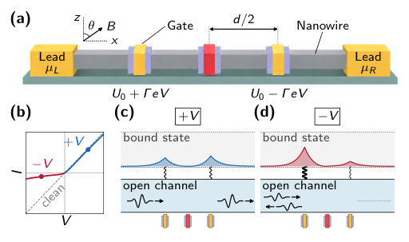
<figcaption class="paper-figure-caption"><b>Fig 1.</b> FIG. 1. Minimal device for interference-enhanced rec- tification in mesoscopic nanowires. (a) Rashba nanowire along x in a magnetic field B in the xz plane, at an angle θ to the z axis. Two outer gates separated by d acquire bias- dependent strengths U0 ± ΓeV . The central red element is a magnetic scatterer in the 1D model or a bias-independent scalar gate in the quasi-1D model with two transverse sub- bands. (b) Schematic current–voltage characteristic of the device compared with that of the clean wire (gray), with dots at the operating bias ±V . (c,d) Mechanism at ±V . The gates bind a state in a closed channel (bound state), namely the second transverse subband (quasi-1D) or the upper...</figcaption>
</figure>
<figure class="paper-figure-card">
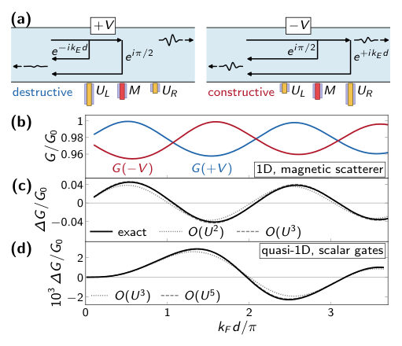
<figcaption class="paper-figure-caption"><b>Fig 2.</b> FIG. 2. Weak-scattering rectification and its Born- interference origin. (a) First-order scalar and magnetic backscattering paths in the 1D model for an electron incident from the left, which interfere destructively at +V and con- structively at −V , drawn for kEd ≈π/2 and M &lt; 0 &lt; U0; the taller outer gate is the stronger one. (b,c) Directional con- ductances and diode effectiveness ∆G/G0 [Eq. (8)] for the 1D model and (d) ∆G/G0 for the quasi-1D model with three weak scalar gates (see SM for details [59]), numerically exact (solid) and in the Born expansion to the indicated order (dotted, dashed). Both calculations use m∗= 0.014me, αR = 0.5 eV ˚A, T = 25 mK, and bias-dependent gates, ΓeV/U0...</figcaption>
</figure>
<figure class="paper-figure-card">
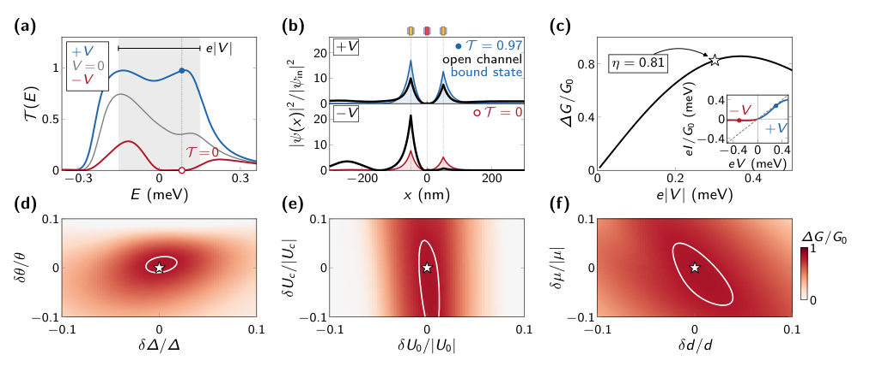
<figcaption class="paper-figure-caption"><b>Fig 3.</b> FIG. 3. Resonantly enhanced quasi-1D rectifier. (a) Transmission of the three-gate device at +V (blue), V = 0 (gray), and −V (red), with the bias window shaded and the exact zero at E0 for −V marked by the open circle. (b) Densities |ψ(x)|2 of the scattering states at E0 for incidence from the left in the lowest (open channel, black) and second subband (bound state, colored), relative to the uniform density |ψin|2 of the incident open-channel wave; markers as in (a). (c) Diode effectiveness ∆G/G0 [Eq. (8)] versus bias magnitude, with the diode efficiency η at the operating point (star). Inset: current–voltage characteristic of the device, with dots at ±V , and of the clean wire (dashed)....</figcaption>
</figure>
</div>

<p><strong>Summary.</strong> This work demonstrates how to engineer highly nonreciprocal current flow in nanoscale nanowires using only coherent elastic scattering and gate potentials. By breaking specific symmetries, the authors achieve an order-unity diode response, which is crucial for building compact quantum signal control devices. The theoretical framework details the transition from simple 1D models to more complex quasi-1D systems to maximize this effect.</p>
<p><strong>Why it may be interesting.</strong> The mechanism relies on controlling quantum interference and symmetry breaking in mesoscopic conductors, which is highly relevant to open quantum systems and quantum transport theory.</p>
<details>
<summary>Detailed structure</summary>
<p><strong>Main problem.</strong> The paper addresses the need for nanoscale nonreciprocal elements for quantum technologies, as existing components are often too bulky.</p>
<p><strong>Main result.</strong> Strong nonreciprocal current-voltage relations (diode response) can be achieved purely through coherent elastic scattering in mesoscopic Rashba nanowires by engineering specific symmetry breakings.</p>
<p><strong>Method.</strong> The analysis uses the Landauer formula and scattering matrix formalism, deriving transmission probabilities in both weak and strong scattering regimes.</p>
<p><strong>Model / system.</strong> The system is a mesoscopic Rashba nanowire with gate-defined scatterers, modeled in both 1D and quasi-1D settings, incorporating spin-orbit coupling and transverse subband mixing.</p>
<p><strong>Key observables.</strong> Nonreciprocal conductance ($\Delta G/G_0$), diode efficiency ($\eta$), and transmission probability $T(E, V)$ for positive and negative bias polarities.</p>
<p><strong>Important parameters / regimes.</strong> Gate potential changes ($\sim 1\%$), transverse coupling strength ($\lambda_\perp$), and the presence/absence of magnetic scatterers.</p>
<p><strong>Assumptions / limitations.</strong> The analysis assumes a symmetric bias ($\mu_L = eV/2, \mu_R = -eV/2$) and relies on scattering theory approximations (e.g., Born expansion).</p>
<p><strong>Figures summary.</strong> Figures illustrate the device setup, show interference paths leading to rectification, and compare $\Delta G/G_0$ vs. bias for optimized single-gate versus resonant three-gate devices.</p>
<p><strong>Paper structure.</strong> The paper first establishes the symmetry constraints for reciprocity, then analyzes the weak-scattering regime via interference, and finally explores the strong-scattering regime using quasi-1D models that achieve high diode response via resonant enhancement.</p>
</details>
<details>
<summary>Abstract</summary>
<p>Nanoscale nonreciprocal elements are needed to control signal flow in scalable quantum technologies, but existing nonreciprocal components are often bulky. Here, we show that a strongly nonreciprocal current-voltage relation can arise entirely from coherent elastic scattering in a mesoscopic Rashba nanowire with gate-defined scatterers. We first identify the symmetry constraints that enforce reciprocal transmission in a phase coherent conductor even when inversion and time-reversal symmetry are broken. We then show how gates that are capacitively coupled to the leads, together with a magnetic scatterer or transverse subband mixing, can remove these constraints. In the weak-scattering regime, nonreciprocal conductance originates from interference between distinct backscattering paths. In the strong-scattering regime, nonreciprocity can be resonantly enhanced by the hybridization of the transmitting channel with bound states that arise from a higher transverse subband or spin-split band. In this regime, we find that a bias-induced change in the gate potentials of about one percent can produce an order-unity diode response, i.e., electrons are transmitted almost as in a clean wire for one bias polarity, whereas for the other polarity the current is strongly suppressed.</p>
</details>
<p><sub><a href="#top">↑ back to top</a></sub></p>

<p><a id="paper-2610.29973"></a></p>
<h3 id="ntl-amplification-in-a-supercdms-style-detector-fabricated-from-a-university-of-south-dakota-grown-germanium-crystal"><a href="http://arxiv.org/abs/2610.29973v1">NTL amplification in a SuperCDMS-style detector fabricated from a University of South Dakota-grown germanium crystal</a></h3>
<p><strong>Authors:</strong> Dongming Mei, Gerardo Gonzalez, William Baker, Mark Platt, Nader Mirabolfathi<br>
<strong>Type:</strong> experiment · <strong>Category:</strong> other · <strong>PDF:</strong> <a href="https://arxiv.org/pdf/2610.29973v1">https://arxiv.org/pdf/2610.29973v1</a><br>
<strong>Analysis basis:</strong> full PDF text, analyzed in chunks
<strong>Topic relevance:</strong> <code>analog quantum simulation</code> <strong>1/5</strong> · <code>quantum measurements</code> <strong>1/5</strong></p>
<div class="figure-strip-hint">↔ Scroll figures horizontally</div>
<div class="paper-figures-scroll">
<figure class="paper-figure-card">
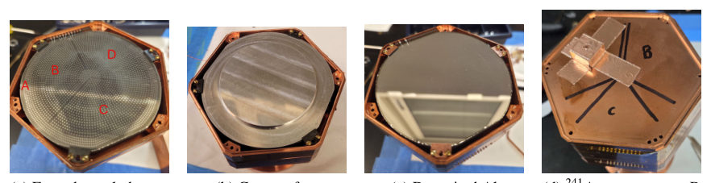
<figcaption class="paper-figure-caption"><b>Fig 1.</b> Figure 1. Detector configurations used in the test campaign. Detector 2 was 75 mm in diameter, 10 mm thick, and had a mass of 230 g. It carried four phonon channels on the instrumented face. Initial operation used a mechanically separated contact-free electrode. The successful final run used a continuous 600 nm Al electrode deposited on the opposite face with a modified Perkin Elmer 4400 sputter coater. The 1 𝜇Ci 241Am source was positioned above channel B at a source-to-detector distance of 26 mm. Photographs are not to a common scale.</figcaption>
</figure>
<figure class="paper-figure-card">
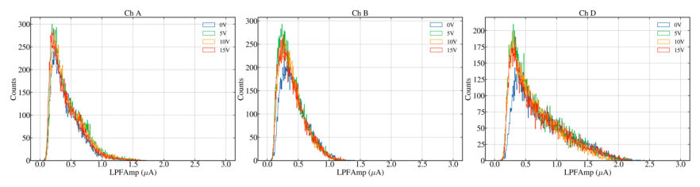
<figcaption class="paper-figure-caption"><b>Fig 2.</b> Figure 2. Amplitude spectra from the second detector in the contact-free configuration at 0 V, 5 V, 10 V, and 15 V. No systematic NTL-induced peak displacement was resolved. The absent fourth panel denotes channel C unavailable during this run and must not be interpreted as a zero-response measurement.</figcaption>
</figure>
<figure class="paper-figure-card">
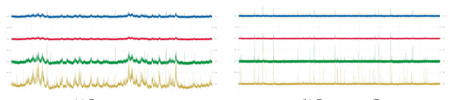
<figcaption class="paper-figure-caption"><b>Fig 3.</b> Figure 3. One-second waveform segments illustrating the environmental-noise limitation. Compressor operation generated strong microphonic structure; with the compressor off, the baseline became substantially quieter, although narrow-band electrical pickup remained in at least one channel.</figcaption>
</figure>
<figure class="paper-figure-card">
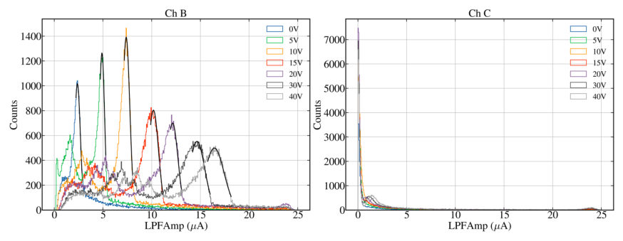
<figcaption class="paper-figure-caption"><b>Fig 4.</b> Figure 4. Final-run low-pass-filter (LPF) amplitude spectra for channels B (left) and C (right) at 0 V, 5 V, 10 V, 15 V, 20 V, 30 V and 40 V. The curves overlaid on the channel-B histograms are the Gaussian fits used to obtain the quantitative peak positions reported in Table 3. The optimal filter was used only to estimate pulse timing and thereby provide an approximate search location for LPF amplitude extraction. Channel B shows clear voltage-dependent NTL amplification. The weak response in channel C is consistent with the 241Am source placement over channel B and local phonon collection.</figcaption>
</figure>
<figure class="paper-figure-card">

<figcaption class="paper-figure-caption"><b>Fig 5.</b> Figure 4 shows the final LPF-amplitude spectra from channels B and C and the Gaussian curves used in the quantitative peak extraction. The channel-B centroid values and statistical uncertainties listed in Table 3 are obtained from these LPF-amplitude distributions; the optimal filter was used only for pulse timing, as described in Sec. 2.5. Channel B exhibits a sequence of well-separated spectral maxima that move to larger pulse amplitude as the bias increases from 0 V to 40 V. The Gaussian centroid increases from (2.377 ± 0.006) 𝜇A at 0 V to (16.420 ± 0.029) 𝜇A at 40 V. The voltage-dependent displacement is much larger than the statistical centroid uncertainties at every bias setting,...</figcaption>
</figure>
</div>

<p><strong>Summary.</strong> This experimental paper reports on the successful demonstration of Neganov-Trofimov-Luke (NTL) phonon amplification in a SuperCDMS-style detector made from University of South Dakota germanium. By applying a deposited aluminum bias contact, the researchers achieved a significant, voltage-dependent enhancement in the measurable phonon signal. This work validates the use of these specific crystal materials and fabrication techniques for next-generation, low-threshold dark matter and neutrino detectors.</p>
<p><strong>Why it may be interesting.</strong> While the primary focus is particle astrophysics detection, the underlying physics involves charge transport and energy deposition in a solid-state semiconductor at cryogenic temperatures, which touches upon concepts relevant to quantum transport and energy dissipation in condensed matter systems.</p>
<details>
<summary>Detailed structure</summary>
<p><strong>Main problem.</strong> The paper aims to demonstrate the feasibility of achieving Neganov-Trofimov-Luke (NTL) amplification in SuperCDMS-style cryogenic detectors using germanium crystals grown at the University of South Dakota.</p>
<p><strong>Main result.</strong> Contacting the detector with a deposited aluminum bias film enabled clear, voltage-dependent NTL gain, showing an enhancement factor of approximately 8.9 between 0 V and 40 V bias.</p>
<p><strong>Method.</strong> The experiment involved operating the detector at 10 mK, varying the bias voltage from 0 V to 40 V, and analyzing the resulting phonon signals using superconducting transition-edge sensors (TES).</p>
<p><strong>Model / system.</strong> The physical system is a SuperCDMS-style four-channel athermal-phonon detector fabricated from USD-grown germanium. The underlying physics involves the NTL amplification mechanism, where the total phonon energy is enhanced by the applied bias voltage.</p>
<p><strong>Key observables.</strong> Voltage-dependent NTL gain (e.g., energy increasing from 3.9 keV to 34.9 keV), and measured effective prompt- and NTL-phonon response coefficients.</p>
<p><strong>Important parameters / regimes.</strong> Crystal impurity concentration ($\sim 10^{10} 	ext{ cm}^{-3}$), etch-pit density ($300–7000 	ext{ cm}^{-2}$), and operating temperature ($\sim 10 	ext{ mK}$).</p>
<p><strong>Assumptions / limitations.</strong> The measured response coefficients exclude systematic uncertainties related to full calibration or TES response, and the results are considered a 'proof-of-principle' rather than a final qualification.</p>
<p><strong>Figures summary.</strong> Figures illustrate detector configurations, amplitude spectra showing the lack of gain in contact-free runs, and LPF-amplitude histograms used for quantitative peak extraction across varying bias voltages.</p>
<p><strong>Paper structure.</strong> The paper progresses by first establishing the need for NTL amplification for low-mass dark matter searches, detailing the experimental setup using USD-Ge crystals, showing the failure of initial contact-free tests, and finally presenting the successful, quantified NTL gain achieved after depositing a continuous aluminum bias contact.</p>
</details>
<details>
<summary>Abstract</summary>
<p>Neganov-Trofimov-Luke (NTL) amplification enables eV-sub-keV detection thresholds for low-mass dark-matter and coherent elastic neutrino-nucleus scattering experiments. We evaluated two University of South Dakota (USD)-grown germanium crystals fabricated as SuperCDMS-style four-channel athermal-phonon detectors and operated near 10 mK. The crystals had electrically active impurity concentrations near $10^10~\mathrm^-3$ and etch-pit densities of $300$-$7000~\mathrm^-2$. Contact-free biasing produced no resolvable amplification. However, after depositing a 600 nm aluminum bias contact, Detector~2 exhibited clear voltage-dependent NTL gain. The reconstructed channel-B energy increased from approximately 3.9 keV at 0 V to 34.9 keV at 40 V, corresponding to an 8.9-fold enhancement. Statistical centroid uncertainties were below 0.3%, while low-bias fits yielded effective prompt- and NTL-phonon response coefficients of $(6.77\pm0.82)%$ and $(4.77\pm0.20)%$, respectively, excluding systematic uncertainties. These results demonstrate the feasibility of USD-grown germanium for SuperCDMS-style high-voltage phonon detectors and highlight the importance of both crystal quality and contact fabrication in achieving NTL amplification.</p>
</details>
<p><sub><a href="#top">↑ back to top</a></sub></p>

<p><a id="paper-2610.29739"></a></p>
<h3 id="electric-field-tunable-spin-texture-in-dual-gated-hfsmath911mathgraphene-van-der-waals-heterostructures"><a href="http://arxiv.org/abs/2610.29739v1">Electric-field tunable spin texture in dual-gated HfS$_2$/graphene van der Waals heterostructures</a></h3>
<p><strong>Authors:</strong> Haozhe Yang, Zhendong Chi, Eoin Dolan, Josep Ingla-Aynés, Beatriz Martín-García, Witold Skowroński, Marco Gobbi, Andrey Chuvilin, Luis E. Hueso, Fèlix Casanova<br>
<strong>Type:</strong> experiment · <strong>Category:</strong> other · <strong>PDF:</strong> <a href="https://arxiv.org/pdf/2610.29739v1">https://arxiv.org/pdf/2610.29739v1</a><br>
<strong>Analysis basis:</strong> full PDF text, analyzed in chunks
<strong>Topic relevance:</strong> <code>quantum measurements</code> <strong>1/5</strong></p>
<div class="figure-strip-hint">↔ Scroll figures horizontally</div>
<div class="paper-figures-scroll">
<figure class="paper-figure-card">
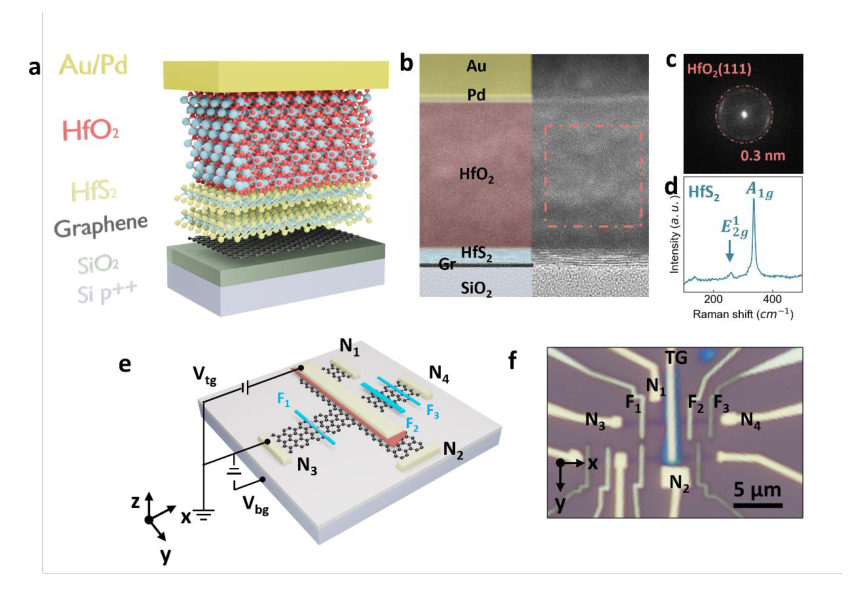
<figcaption class="paper-figure-caption"><b>Fig 1.</b> Fig. 1 Structure and characterization of dual-gated HfO₂/HfS₂/graphene lateral spin valve devices. a, Schematic</figcaption>
</figure>
<figure class="paper-figure-card">
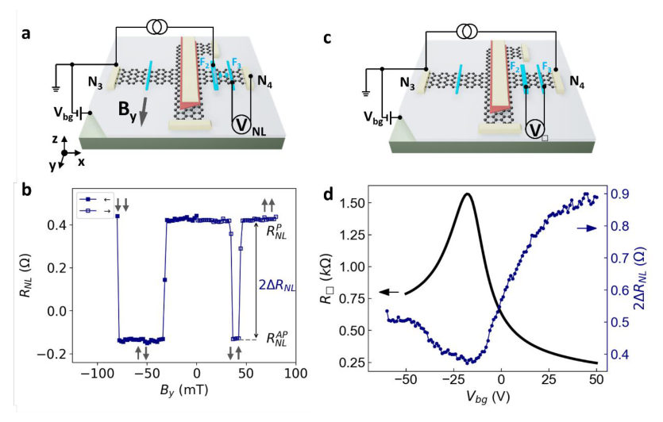
<figcaption class="paper-figure-caption"><b>Fig 2.</b> Fig. 2 Charge and spin transport in the pristine graphene. a, Sketch of the nonlocal spin valve measurement</figcaption>
</figure>
<figure class="paper-figure-card">
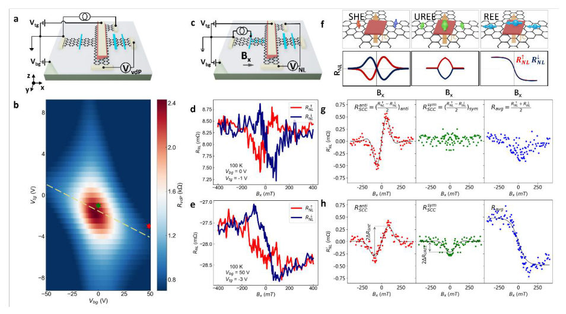
<figcaption class="paper-figure-caption"><b>Fig 3.</b> Fig. 3 Electric-field control of spin–charge interconversion in HfS₂/graphene. a, Measurement geometry for the</figcaption>
</figure>
<figure class="paper-figure-card">
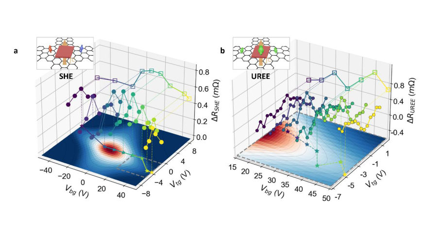
<figcaption class="paper-figure-caption"><b>Fig 4.</b> Fig. 4 Dual-gate mapping of SHE and UREE in HfS₂/graphene. a, Gate dependence of the extracted SHE amplitude,</figcaption>
</figure>
</div>

<p><strong>Summary.</strong> This work demonstrates the electrical tunability of spin-orbit functionalities in a HfS2/graphene van der Waals heterostructure. By applying a vertical electric field via dual gating, researchers can actively reconfigure the system's spin texture. This control allows for the experimental separation and tuning of different spin-charge conversion mechanisms, advancing the field of solid-state spintronics.</p>
<p><strong>Why it may be interesting.</strong> The ability to electrically tune spin-orbit coupling effects in a solid-state heterostructure provides a clean, gate-controlled platform for studying spin-charge conversion, which is fundamental to advanced spintronics.</p>
<details>
<summary>Detailed structure</summary>
<p><strong>Main problem.</strong> The study aims to control the spin texture and spin-charge interconversion (SCC) in spintronic devices by tuning the system's symmetry using an external electric field.</p>
<p><strong>Main result.</strong> The vertical electric field can reconfigure the effective spin texture, allowing for the electrical tunability of spin-orbit functionalities by enhancing in-plane spin components with a Rashba-Edelstein-like character.</p>
<p><strong>Method.</strong> Nonlocal spin precession measurements were performed on a dual-gated van der Waals heterostructure, allowing for independent control of carrier density and vertical electric field.</p>
<p><strong>Model / system.</strong> The physical platform is a dual-gated HfS2/graphene van der Waals heterostructure. The analysis relies on understanding spin-charge interconversion components (Spin Hall, Rashba-Edelstein) governed by the applied electric field.</p>
<p><strong>Key observables.</strong> Nonlocal resistance (R_NL), spin texture components (out-of-plane vs. in-plane), and the relative contributions of SHE and REE signals.</p>
<p><strong>Important parameters / regimes.</strong> Vertical electric field (E_z), carrier density (controlled by dual gating), and magnetic field strength (for precession measurements).</p>
<p><strong>Assumptions / limitations.</strong> The residual HfS2 acts as an insulator, confining transport to graphene; the analysis simplifies the top dielectric to HfO2.</p>
<p><strong>Figures summary.</strong> Figures detail the device structure, nonlocal spin valve measurement setups for pristine graphene, and van der Pauw mapping showing charge neutrality points controlled by both gate voltages.</p>
<p><strong>Paper structure.</strong> The paper establishes the physical platform and measurement techniques, demonstrates gate control over charge transport, and then uses nonlocal spin measurements to show how the vertical electric field tunes the spin-charge conversion mechanism from SHE-dominated to REE-enhanced.</p>
</details>
<details>
<summary>Abstract</summary>
<p>Spin-charge interconversion provides the essential link between spin information and electrical signals in spintronic devices. In spin-orbit coupled systems, spin-charge interconversion can contain multiple components associated with different spin-polarization directions, reflecting the underlying spin texture. Tuning this spin texture therefore provides a way to control not only the magnitude of spin-charge interconversion, but also the balance among its different components. Graphene-based van der Waals heterostructures provide an attractive platform for this purpose because interfacial spin-orbit coupling can host multiple spin-charge interconversion channels that couple to different spin-polarization directions. Here, we demonstrate electric-field control of spin texture in a dual-gated HfS$_2$/graphene van der Waals heterostructure, where independent control of carrier density and vertical electric field allows us to disentangle electrostatic doping from electric field-induced spin-orbit effects. Nonlocal spin precession measurements show that near zero vertical electric field, spin-charge interconversion is dominated by a spin Hall component with out-of-plane spins. Increasing the vertical electric field enhances additional in-plane spin components with Rashba-Edelstein-like character, including both parallel and perpendicular to the charge current contributions. These results provide experimental evidence that a vertical electric field can reconfigure the effective spin texture and control the corresponding spin-charge interconversion components, demonstrating electrical tunability of spin-orbit functionalities.</p>
</details>
<p><sub><a href="#top">↑ back to top</a></sub></p>

<p><a id="paper-2610.29583"></a></p>
<h3 id="superconductivity-via-repulsive-interaction-in-the-model-with-electrons-and-holes"><a href="http://arxiv.org/abs/2610.29583v1">Superconductivity via repulsive interaction in the model with electrons and holes</a></h3>
<p><strong>Authors:</strong> A. O. Sboychakov<br>
<strong>Type:</strong> theory · <strong>Category:</strong> strongly correlated electrons · <strong>PDF:</strong> <a href="https://arxiv.org/pdf/2610.29583v1">https://arxiv.org/pdf/2610.29583v1</a><br>
<strong>Analysis basis:</strong> full PDF text, analyzed in chunks
<strong>Topic relevance:</strong> <code>Keldysh / 2PI / non-Gaussian methods</code> <strong>1/5</strong></p>
<div class="figure-strip-hint">↔ Scroll figures horizontally</div>
<div class="paper-figures-scroll">
<figure class="paper-figure-card">
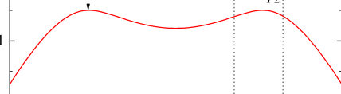
<figcaption class="paper-figure-caption"><b>Fig 1.</b> FIG. 1: The electron spectrum, Eq. (4), calculated at E∗= E0, ∆0 = 0.5E0, a = a0, and p0 = π/(4a0). In doped sys- tem the chemical potential, laying in the range ∆0 &lt; µ &lt; p</figcaption>
</figure>
<figure class="paper-figure-card">
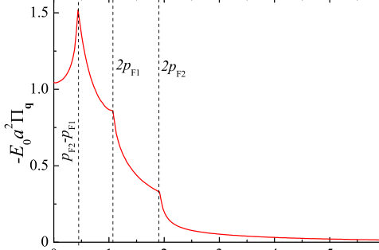
<figcaption class="paper-figure-caption"><b>Fig 2.</b> FIG. 2: Momentum dependence of the polarization operator calculated at µ/∆0 = 1.05. Other model parameters are: E∗= E0, ∆0 = E0, a = a0, and p0 = π/(4a0).</figcaption>
</figure>
<figure class="paper-figure-card">
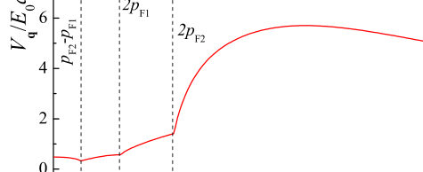
<figcaption class="paper-figure-caption"><b>Fig 3.</b> FIG. 3: Momentum dependence of the screened Coulomb in- teraction calculated at α = α0. Other model parameters are the same as in Fig. 2.</figcaption>
</figure>
<figure class="paper-figure-card">
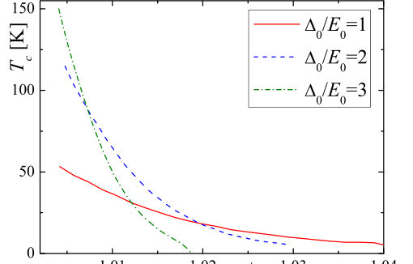
<figcaption class="paper-figure-caption"><b>Fig 4.</b> FIG. 4: The dependence of the transition temperature on the chemical potential calculated for three different values of ∆0. Model parameters are: E∗= E0, a = a0, p0 = π/(4a0), α = α0.</figcaption>
</figure>
<figure class="paper-figure-card">
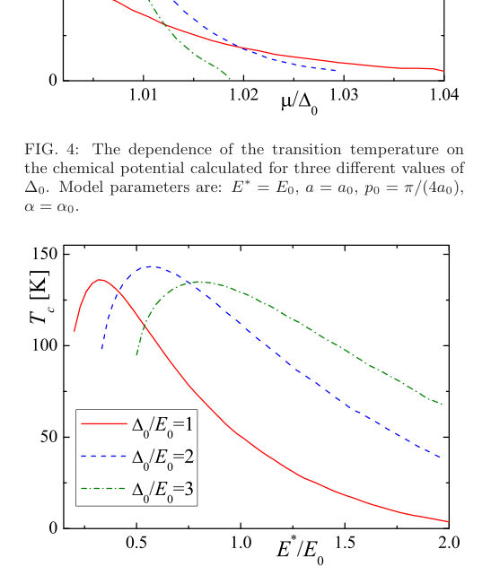
<figcaption class="paper-figure-caption"><b>Fig 5.</b> FIG. 5: The dependence of the transition temperature on the parameter E∗calculated for three different values of ∆0. Cal- culations are performed at fixed ratio ε(µ)/∆0 = µ/∆0 −1 = 0.005. Other model parameters are: a = a0, p0 = π/(4a0), ǫ = 1.</figcaption>
</figure>
</div>

<p><strong>Summary.</strong> This theoretical work models superconductivity in a 2D electron gas containing both electrons and holes. It demonstrates that the repulsive, screened Coulomb interaction can stabilize a spin-triplet p-wave superconducting state. The calculations predict a high critical temperature, making it relevant for understanding unconventional superconductivity in correlated materials.</p>
<p><strong>Why it may be interesting.</strong> The mechanism relies on repulsive interactions (Kohn-Luttinger type) to induce unconventional superconductivity, which is a central topic in strongly correlated electron physics, relevant to high-Tc superconductors.</p>
<details>
<summary>Detailed structure</summary>
<p><strong>Main problem.</strong> The study investigates the mechanism of superconductivity mediated by repulsive interactions in a model containing both electron-like and hole-like charge carriers.</p>
<p><strong>Main result.</strong> The screened Coulomb interaction is sufficient to stabilize a superconducting state characterized by a spin-triplet p-wave order parameter, with a predicted transition temperature up to 150 Kelvin.</p>
<p><strong>Method.</strong> The analysis employs a BCS-like approach using the Random Phase Approximation (RPA) to calculate the screened interaction and solve the self-consistency equation for the superconducting order parameter.</p>
<p><strong>Model / system.</strong> The system is a toy model of a 2D electron gas featuring hybridized electron-like and hole-like charge carriers. The undoped state is insulating, and superconductivity emerges upon slight doping.</p>
<p><strong>Key observables.</strong> Superconducting transition temperature ($T_c$), order parameter symmetry ($\Delta_p$), and the density of states ($
ho(\mu)$).</p>
<p><strong>Important parameters / regimes.</strong> Model parameters include the hybridization gap ($\Delta_0$), chemical potential ($\mu$), and interaction strength ($V_0(q)$).</p>
<p><strong>Assumptions / limitations.</strong> The Random Phase Approximation (RPA) is used for screening, and the calculation assumes specific forms for the order parameter symmetry ($\ell=1$ p-wave).</p>
<p><strong>Figures summary.</strong> Figures illustrate the electron spectrum, the momentum dependence of the polarization operator, and the resulting screened Coulomb interaction, which stabilizes superconductivity.</p>
<p><strong>Paper structure.</strong> The paper establishes the model, calculates the screened interaction via RPA, derives the self-consistency equation for the order parameter, and determines $T_c$ by finding the largest eigenvalue of the kernel.</p>
</details>
<details>
<summary>Abstract</summary>
<p>We study a toy model of the 2D electron gas including electron-like and hole-like charge carriers hybridized between each other. Electrons and holes can move either in different layers or in the same layer. Undoped system is an insulator. Slight doping brings extra charge carriers having large density of states. We show that the screened Coulomb interaction is enough to stabilize the superconductivity in the slightly doped system. The symmetry of the order parameter corresponds to the spin-triplet $p$-wave order. For realistic values of the model parameters the superconducting transition temperature can reach the value of $150$ kelvin.</p>
</details>
<p><sub><a href="#top">↑ back to top</a></sub></p>
<h3 id="other-secondary-papers-6">Other secondary papers (6)</h3>
<details>
<summary>Show other secondary papers</summary>

<p><a id="paper-2610.29694"></a></p>
<h3 id="effect-of-annealing-on-maze-domains-in-topological-insulator-magnetic-multilayer-heterostructures"><a href="http://arxiv.org/abs/2610.29694v1">Effect of Annealing on Maze Domains in Topological Insulator - Magnetic Multilayer Heterostructures</a></h3>
<p><strong>Authors:</strong> Benjamin A. Brereton, Soumyarup Hait, Christy J. Kinane, Francesco Maccherozzi, Ahmet Yagmur, Satoshi Sasaki, Thomas A. Moore, Sean Langridge, Christopher H. Marrows<br>
<strong>Type:</strong> experiment · <strong>Category:</strong> other · <strong>PDF:</strong> <a href="https://arxiv.org/pdf/2610.29694v1">https://arxiv.org/pdf/2610.29694v1</a><br>
<strong>Analysis basis:</strong> full PDF text, analyzed in chunks</p>
<div class="figure-strip-hint">↔ Scroll figures horizontally</div>
<div class="paper-figures-scroll">
<figure class="paper-figure-card">
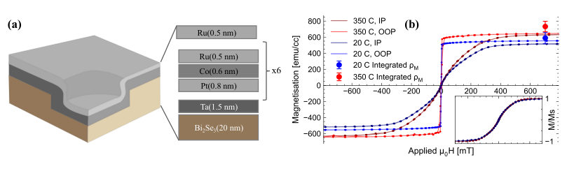
<figcaption class="paper-figure-caption"><b>Fig 1.</b> Figure 1. Sample structure and magnetic characterisation. (a) Schematic of sample including an impression of the effect of TI terracing. Here the relative scale of the terrace heights has been exaggerated for clarity; (b) SQUID VSM M(H) hysteresis loops measured at room temperature in in-plane and out of plane geometries for as grown and 350 ◦C annealed samples. The magnetic moment/area value extracted from PNR slab model fittings in Fig. 3(b) is additionally shown as the large markers. Inset axes show normalised in-plane curves for both temperatures.</figcaption>
</figure>
<figure class="paper-figure-card">
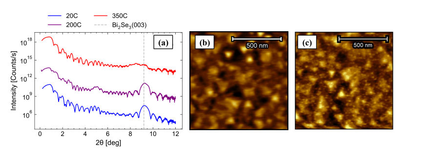
<figcaption class="paper-figure-caption"><b>Fig 2.</b> Figure 2. Structural changes to samples due to annealing. (a) XRR curves taken after annealing at different temperatures. The Bi2Se3(003) XRD peak is marked. The curves are vertically offset for clarity; (b-c) 2 µm × 2 µm atomic force microscopy images of samples (b) as grown and (c) after 350 ◦C annealing.</figcaption>
</figure>
<figure class="paper-figure-card">
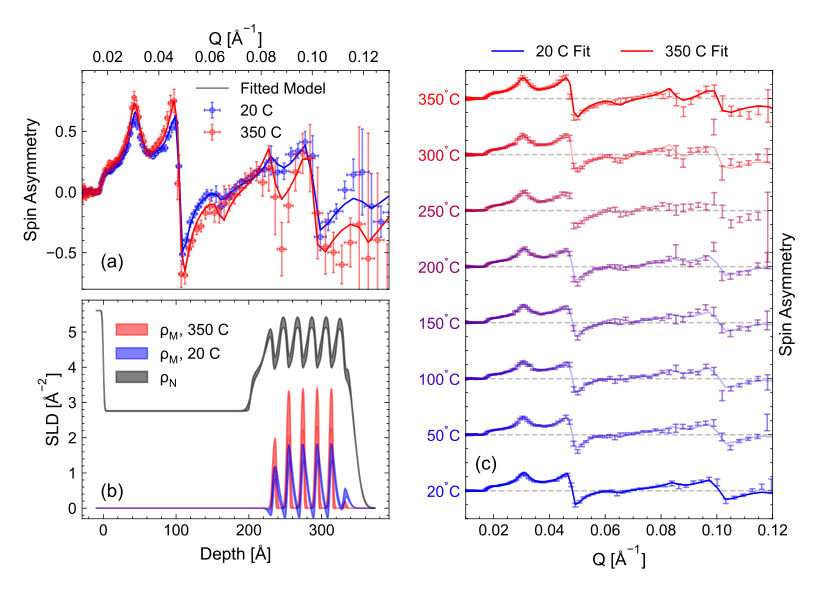
<figcaption class="paper-figure-caption"><b>Fig 3.</b> Figure 3. Polarised neutron reflectometry measurements after successive annealing steps at increasing temperature: (a) shows the spin asymmetry profiles for as-grown (20 ◦C ) and after a 350 ◦C anneal, including their respective fits corresponding to slab models for which the SLD profiles are shown in (b). Respective 2σ confidence ranges are shown. Shown in (c) are the intermediate temperature measurements with either 20 or 350 ◦C fits overlaid where they best describe the data.</figcaption>
</figure>
<figure class="paper-figure-card">
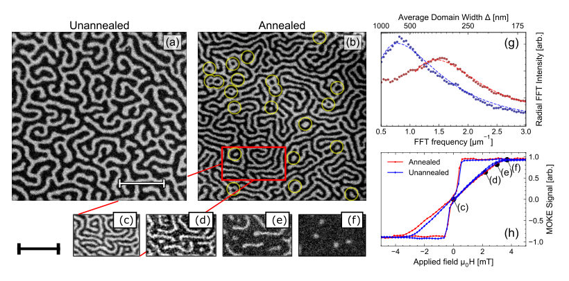
<figcaption class="paper-figure-caption"><b>Fig 4.</b> Figure 4. The effect of annealing on the observed domain structure: X-PEEM images on samples (a) before and (b) after a 200 ◦C anneal. The included scale bar in (a) represents 5 µm for both (a) and (b). In (b) skyrmion-like features are highlighted by yellow circles. (c-f) shows field evolution of the highlighted region in (b) under an increasing applied field resulting in isolated skyrmion nucleation; (g) shows the radial FFT intensity dependence for both (a) and (b) with fitted log-normal distributions. A scale bar for (c-f) is included representing 5 µm. (h) shows polar MOKE magnetometry under an out-of-plane applied field for both samples shown in (a) and (b). Here the corresponding...</figcaption>
</figure>
</div>
<p><strong>Summary.</strong> This work demonstrates that optimizing the annealing temperature is crucial for maintaining the functionality of Topological Insulator/Magnetic Multilayer heterostructures. By using advanced techniques like PNR and XRD, the authors pinpoint an optimal annealing window ($\sim 200^\circ	ext{C}$) that enhances magnetic domain ordering and stabilizes skyrmions without causing detrimental structural damage to the underlying TI film.</p>
<p><strong>Why it may be interesting.</strong> While focused on condensed matter magnetism, the precise control over interfacial properties via thermal annealing and the study of emergent topological magnetic textures (skyrmions) are highly relevant to developing quantum spintronic devices.</p>
<details>
<summary>Detailed structure</summary>
<p><strong>Main problem.</strong> The study investigates how annealing temperature affects the magnetic domain ordering and structural integrity of Topological Insulator - Magnetic Multilayer Heterostructures.</p>
<p><strong>Main result.</strong> Annealing at an intermediate temperature ($\sim 200^\circ	ext{C}$) optimizes magnetic domain ordering, enabling skyrmion nucleation, while high temperatures ($350^\circ	ext{C}$) cause significant structural deterioration of the TI film.</p>
<p><strong>Method.</strong> The research employs a combination of <em>in-situ</em> annealing, Polarized Neutron Reflectometry (PNR) for depth-resolved magnetism, X-ray Diffraction (XRD) for crystallinity, and Atomic Force Microscopy (AFM) for surface topography.</p>
<p><strong>Model / system.</strong> The physical system is a multilayer heterostructure combining a Topological Insulator ($    ext{Bi}_2   ext{Se}_3$) with chiral magnetic multilayers (e.g., $   ext{Pt}/    ext{CoB}/   ext{Ru}$). The analysis models the magnetic response using slab fitting techniques.</p>
<p><strong>Key observables.</strong> Spin Asymmetry ($  ext{SA}$), saturation magnetization ($  ext{M}_s$), effective anisotropy field ($ ext{H}_k$), domain width, and XRD peak intensities/shifts.</p>
<p><strong>Important parameters / regimes.</strong> Annealing temperatures ($200^\circ	ext{C}$ vs $350^\circ	ext{C}$), magnetic field range ($\pm 2 	ext{ T}$), and the structural loss percentage of Selenium ($  ext{Se}$).</p>
<p><strong>Assumptions / limitations.</strong> The analysis assumes that changes in reflectivity are primarily magnetic in origin when fitting PNR data, and that structural degradation (Se loss) can be modeled using site-specific vacancy calculations.</p>
<p><strong>Figures summary.</strong> Figures compare magnetic hysteresis loops and structural data (XRR/XRD) before and after annealing at different temperatures, showing the optimal balance between magnetic enhancement and structural preservation.</p>
<p><strong>Paper structure.</strong> The paper systematically compares the magnetic and structural properties across a temperature gradient, using PNR and XRD to diagnose the physical mechanisms behind changes in magnetic ordering (domain size) versus material degradation (crystallinity loss).</p>
</details>
<details>
<summary>Abstract</summary>
<p>Combining topological insulators with chiral magnetic multilayers offers the opportunity to greatly enhance the spin-orbit torque (SOT) driven manipulation of hosted spin textures, however this also exposes devices to the often poor temperature stability of the commonly used, Bi$_2$X$_3$-based (X is a chalcogenic element), topological insulator films. In this work we demonstrate through in-situ-annealing and polarised neutron reflectometry that the multilayer at a Bi$_2$Se$_3$ interface remains magnetically robust up to a temperature of 350 $^{\circ}$C: even as the Bi$_2$Se$_3$ epilayer structurally deteriorates. Through x-ray photoemission electron microscopy, an intermediate annealing temperature of $\sim$ 200 $^{\circ}$C was found to improve the domain ordering of the multilayer, allowing for field-induced skyrmion nucleation, all whilst sustaining minimal damage to the topological insulator</p>
</details>
<p><sub><a href="#top">↑ back to top</a></sub></p>

<p><a id="paper-2610.29064"></a></p>
<h3 id="exotic-vortex-states-and-enhancement-of-orbital-upper-critical-fields-in-an-math939math-wave-quasicrystalline-superconductor"><a href="http://arxiv.org/abs/2610.29064v1">Exotic vortex states and enhancement of orbital upper critical fields in an $s$-wave quasicrystalline superconductor</a></h3>
<p><strong>Authors:</strong> Takumi Fukushima, Yuki Yamamoto, Nayuta Takemori, Shiro Sakai, Masanori Ichioka, Anuradha Jagannathan<br>
<strong>Type:</strong> theory · <strong>Category:</strong> other · <strong>PDF:</strong> <a href="https://arxiv.org/pdf/2610.29064v1">https://arxiv.org/pdf/2610.29064v1</a><br>
<strong>Analysis basis:</strong> full PDF text, analyzed in chunks</p>
<div class="figure-strip-hint">↔ Scroll figures horizontally</div>
<div class="paper-figures-scroll">
<figure class="paper-figure-card">
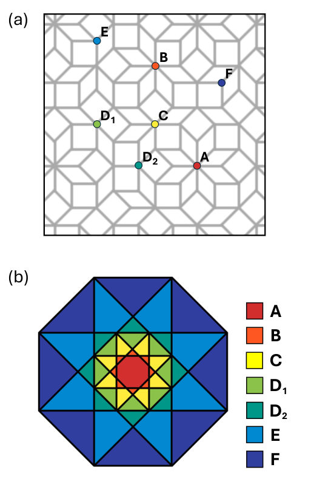
<figcaption class="paper-figure-caption"><b>Fig 1.</b> FIG. 1. (a) Portion of the AB tiling showing representative sites of the seven vertex types. (b) Perpendicular space col- ored based on the vertex type projected onto the correspond- ing position. The correspondence between the vertex types and colors is shown in panel (a).</figcaption>
</figure>
<figure class="paper-figure-card">
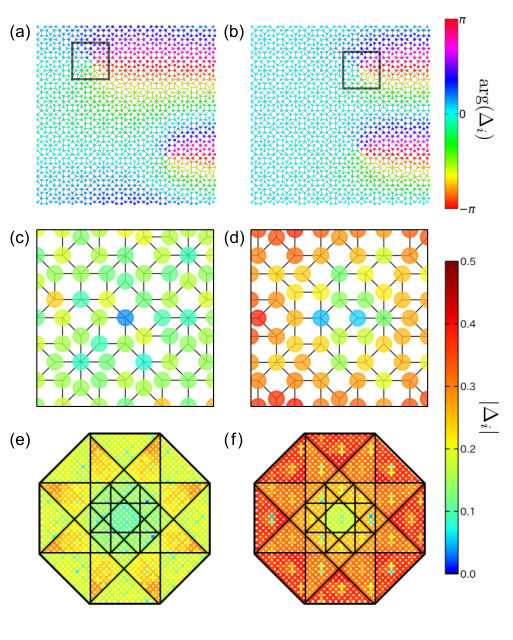
<figcaption class="paper-figure-caption"><b>Fig 2.</b> FIG. 2. Spatial distributions of the order parameter ∆i in real space [panels (a)-(d)] and perpendicular space [panels (e) and (f)] at T = 0.01 for ν = 0.5 [panels (a), (c), and (e)] and ν = 0.8 [panels (b), (d), and (f)] at Nϕ = 1. In the top panels, the color of the circles represents the phase arg(∆i), and the black boxes indicate the regions enlarged in the middle panels. The middle and bottom panels show the amplitude |∆i|.</figcaption>
</figure>
<figure class="paper-figure-card">

<figcaption class="paper-figure-caption"><b>Fig 3.</b> FIG. 3. Spatial distributions of the order parameter amplitude |∆i| in real space [panels (a)-(c)] and perpendicular space [panels (d)-(f)] at T = 0.01 for ν = 0.5. The left, middle, and right panels correspond to B ≈0.5Bc2 (Nϕ = 10), 0.7Bc2 (Nϕ = 15), and 0.9Bc2 (Nϕ = 20), respectively.</figcaption>
</figure>
<figure class="paper-figure-card">

<figcaption class="paper-figure-caption"><b>Fig 4.</b> FIG. 4. Spatial distributions of the order parameter amplitude |∆i| in real space [panels (a)-(c)] and perpendicular space [panels (d)-(f)] at T = 0.01 for ν = 0.8. The left, middle, and right panels correspond to B ≈0.5Bc2 (Nϕ = 65), 0.7Bc2 (Nϕ = 90), and 0.9Bc2 (Nϕ = 115), respectively.</figcaption>
</figure>
<figure class="paper-figure-card">

<figcaption class="paper-figure-caption"><b>Fig 5.</b> FIG. 5. Field dependence of the spatially averaged or- der parameter ¯∆for the square lattice (SL) and the Am- mann–Beenker (AB) approximant at the fillings ν = 0.5 and 0.8. The inset shows a representative vortex cluster in the plateau region of the AB approximant at ν = 0.8. The red plaquettes denote elementary plaquettes with winding num- ber Wp = 1.</figcaption>
</figure>
</div>
<p><strong>Summary.</strong> This theoretical study investigates vortex physics in $s$-wave superconductors placed on quasicrystalline lattices. Using the BdG theory, the authors find that the local geometry dictates vortex placement, causing the superconducting order parameter to exhibit a plateau-like field dependence at specific fillings. This confirms that the unique superconducting response is intrinsically linked to the quasiperiodic structure rather than global boundary effects.</p>
<p><strong>Why it may be interesting.</strong> This work provides a detailed theoretical understanding of how geometric frustration and quasiperiodicity fundamentally alter macroscopic superconducting properties like $B_{c2}$, offering insights into unconventional superconductivity beyond simple periodic lattices.</p>
<details>
<summary>Detailed structure</summary>
<p><strong>Main problem.</strong> The study investigates how the intrinsic spatial inhomogeneity of quasicrystalline lattices affects the vortex states and the enhancement of the orbital upper critical field ($B_{c2}$) in $s$-wave superconductors.</p>
<p><strong>Main result.</strong> Vortex organization is strongly dictated by the local geometry, leading to a plateau-like field dependence of the order parameter at specific fillings ($
u=0.8$) and an enhanced $B_{c2}$ that increases upon cooling.</p>
<p><strong>Method.</strong> The analysis employs the Bogoliubov-de Gennes (BdG) mean-field theory to solve for the superconducting order parameter in the presence of a magnetic field.</p>
<p><strong>Model / system.</strong> The system is an $s$-wave superconductor modeled on the Ammann-Beenker (AB) tiling, a paradigmatic 2D quasiperiodic structure. The Hamiltonian is analyzed using the BdG formalism, incorporating the magnetic field via the Peierls substitution.</p>
<p><strong>Key observables.</strong> Spatially averaged order parameter ($ar{\Delta}$), vortex configuration, upper critical field ($B_{c2}$), and the fraction of strongly suppressed superconducting sites ($f(B; q)$).</p>
<p><strong>Important parameters / regimes.</strong> Filling ($
u=0.8$), high-field regime ($0.5 B_{c2} \le B \le 0.9 B_{c2}$), and temperature ($T=0.01$).</p>
<p><strong>Assumptions / limitations.</strong> The superconducting state is assumed to be $s$-wave, and the calculations utilize the BdG mean-field theory on finite approximants of the AB tiling.</p>
<p><strong>Figures summary.</strong> Figures illustrate the spatial distribution of the order parameter and supercurrents at various magnetic fields, comparing results from periodic approximants versus open boundary conditions to confirm the local geometric origin of the effects.</p>
<p><strong>Paper structure.</strong> The paper systematically analyzes the vortex state evolution by first establishing the model (BdG on AB tiling), then examining the field dependence of the order parameter ($ar{\Delta}$), and finally confirming the robustness of the observed plateau-like behavior and $B_{c2}$ enhancement across different boundary conditions.</p>
</details>
<details>
<summary>Abstract</summary>
<p>Quasicrystals possess long-range order without translational symmetry, giving rise to intrinsically inhomogeneous superconducting states. Using the Bogoliubov-de Gennes mean-field theory, we investigate vortex states in an $s$-wave quasicrystalline superconductor on the Ammann-Beenker tiling, with particular emphasis on the high-field regime. We find that the vortex configuration can differ qualitatively from the Abrikosov triangular lattice. In particular, at filling $ν=0.8$, vortices preferentially penetrate weak-pairing regions centered on sites with coordination number $8$, indicating that their spatial organization is strongly influenced by the local geometry. Furthermore, we observe an enhanced upper critical field. At $ν=0.8$, where the enhancement is particularly pronounced, the spatially averaged order parameter exhibits a plateau-like field dependence accompanied by the formation of vortex clusters. These clusters accommodate additional flux in locally weak superconducting regions, providing a microscopic interpretation of the plateau-like behavior. Moreover, the upper critical field increases upon cooling toward zero temperature without a clear sign of saturation.</p>
</details>
<p><sub><a href="#top">↑ back to top</a></sub></p>

<p><a id="paper-2610.29453"></a></p>
<h3 id="higher-order-angular-momentum-transport-of-alteraxial-phonons-in-2d-magnets"><a href="http://arxiv.org/abs/2610.29453v1">Higher-order Angular Momentum Transport of Alteraxial Phonons in 2D Magnets</a></h3>
<p><strong>Authors:</strong> Linxin Liu, Fuyi Wang, Huaiqiang Wang<br>
<strong>Type:</strong> theory · <strong>Category:</strong> statistical mechanics · <strong>PDF:</strong> <a href="https://arxiv.org/pdf/2610.29453v1">https://arxiv.org/pdf/2610.29453v1</a><br>
<strong>Analysis basis:</strong> full PDF text, analyzed in chunks</p>
<div class="figure-strip-hint">↔ Scroll figures horizontally</div>
<div class="paper-figures-scroll">
<figure class="paper-figure-card">

<figcaption class="paper-figure-caption"><b>Fig 1.</b> FIG. 1. Schematic illustration of phonon angular momentum (PAM) patterns in 2D magnets. Red and blue colors denote opposite signs of the out-of-plane (z) component of the PAM. In contrast to nonaxial phonons carrying no PAM, The axial phonons exhibit s-, p-, d-, f-, g-, and i-wave PAM patterns, with 0, 1, 2, 3, 4, and 6 symmetry-guaranteed zero-PAM nodal lines, respectively. Phonons with higher-order PAM patterns are termed alteraxial phonons.</figcaption>
</figure>
<figure class="paper-figure-card">

<figcaption class="paper-figure-caption"><b>Fig 2.</b> FIG. 3. (a) Schematic of the 2D Lieb lattice model with MPG 4′, hosting the d-wave PAM. The lattice consists of one nonmagnetic atom (C) and two C4zT -connected magnetic atoms (A and B) with opposite out-of-plane magnetic mo- ments. Red solid lines denote nearest-neighbor bonds, yellow dashed lines denote next-nearest-neighbor bonds between A and B, and green dashed lines denote bonds between adjacent C atoms. (b) Representative phonon bands, (c) PAM distri- butions around Γ, and (d) the first- and third-order longitudi- nal PAM response currents versus the in-plane temperature- gradient direction. Phonon frequencies are given in units of ω0 and are therefore dimensionless. Details of the...</figcaption>
</figure>
<figure class="paper-figure-card">

<figcaption class="paper-figure-caption"><b>Fig 3.</b> FIG. 2. (a) Schematic of the 2D lattice model hosting the f- wave PAM. The model consists of a honeycomb lattice with two inequivalent nonmagnetic atoms (denoted by A and B) and a triangular lattice of magnetic atoms (denoted by M). Solid lines denote nearest-neighbor bonds between A, B, and M atoms, and green dashed lines represent bonds between nearest-neighbor M atoms. For the paramagnetic case (MPG 3m.1′): (b) the second- and fourth-order longitudinal PAM response currents versus the in-plane temperature-gradient direction, (c) representative phonon bands, and (e) PAM dis- tributions around Γ. For the ferromagnetic case with out-of- plane moments (MPG 3m′): (d) representative phonon...</figcaption>
</figure>
</div>
<p><strong>Summary.</strong> This work develops a comprehensive, symmetry-guided theory to analyze how higher-order angular momentum (PAM) is transported by alteraxial phonons in 2D magnets under a temperature gradient. By classifying phonon patterns based on symmetry, the authors derive strict selection rules that predict the order and angular dependence of the resulting nonlinear PAM current. This provides a powerful theoretical tool for detecting and utilizing these exotic lattice excitations in magnetic materials.</p>
<p><strong>Why it may be interesting.</strong> The rigorous application of symmetry principles to constrain higher-order transport coefficients (like $\chi^{(N)}$) is a powerful tool applicable to understanding non-equilibrium dynamics in quantum many-body systems, linking lattice structure directly to measurable transport responses.</p>
<details>
<summary>Detailed structure</summary>
<p><strong>Main problem.</strong> The paper aims to systematically classify and develop a theoretical framework for the higher-order angular momentum transport of alteraxial phonons in two-dimensional (2D) magnets.</p>
<p><strong>Main result.</strong> It establishes a symmetry-guided framework that predicts distinct selection rules (parity and angular-harmonic) governing the nonlinear phonon angular momentum current response based on the phonon's multipolar texture.</p>
<p><strong>Method.</strong> The theory uses symmetry analysis to classify phonon patterns and develops a nonlinear transport theory by expanding the phonon distribution function in powers of the temperature gradient.</p>
<p><strong>Model / system.</strong> The system under study is two-dimensional (2D) magnets, focusing on long-wavelength axial phonons. The analysis is generalized but exemplified using effective lattice models realizing f-wave and d-wave PAM patterns.</p>
<p><strong>Key observables.</strong> The angular dependence of the nonlinear Phonon Angular Momentum (PAM) current, which serves as a signature reflecting the underlying multipolar PAM texture.</p>
<p><strong>Important parameters / regimes.</strong> Temperature gradient ($\mathbf{F} = -
abla_r T$), phonon wave patterns (s-, p-, d-, f-, g-, i-wave), and the order of the response ($N$).</p>
<p><strong>Assumptions / limitations.</strong> The analysis assumes an isotropic in-plane phonon dispersion and uses the relaxation-time approximation for the Boltzmann transport equation.</p>
<p><strong>Figures summary.</strong> Figure 1 schematically compares various PAM patterns (s- through i-wave) and their associated zero-PAM nodal lines. Figures 2 and 3 show schematic models and results for f-wave and d-wave PAM patterns, respectively.</p>
<p><strong>Paper structure.</strong> The paper proceeds by first classifying 2D magnetic point groups based on symmetry, then developing the nonlinear PAM transport theory using the Boltzmann equation, and finally deriving and applying the parity and angular-harmonic selection rules to specific wave patterns.</p>
</details>
<details>
<summary>Abstract</summary>
<p>The coupling between lattice vibrations and magnetic order in two-dimensional (2D) magnets gives rise to a variety of physical phenomena, among which magnetic effects of axial phonons carrying phonon angular momentum (PAM) have attracted considerable interest. However, a systematic classification of axial phonons in 2D magnets that covers their multipolar patterns and the resulting transport manifestations remains largely unexplored. Here, based on symmetry analysis, we classify all 2D magnetic point groups by their long-wavelength PAM wave patterns. Beyond the s-wave axial phonon, we identify alteraxial phonons with p-, d-, f-, g-, and i-wave multipolar textures, characterized by 1, 2, 3, 4, and 6 zero-PAM nodal lines, respectively. We then develop a theory of nonlinear PAM transport driven by a temperature gradient and derive two selection rules: a parity selection rule that determines whether the response occurs at even or odd orders, and an angular-harmonic selection rule that fixes the lowest allowed order for each wave pattern. The multipolar PAM patterns and selection rules are exemplified by two effective lattice models realizing f-wave and d-wave PAM patterns, respectivley. The angular dependence of the nonlinear PAM current reflects the underlying multipolar PAM texture, offering a signature for experiments. Our results establish a symmetry-guided framework for detecting and utilizing higher-order PAM textures in 2D magnets.</p>
</details>
<p><sub><a href="#top">↑ back to top</a></sub></p>

<p><a id="paper-2610.29021"></a></p>
<h3 id="josephson-effect-in-symmetry-mismatched-van-der-waals-hybrid-junctions-of-nbse2-bi2sr2cacu2o8x-and-nbse2-bi2sr2-xlaxcuo6y"><a href="http://arxiv.org/abs/2610.29021v1">Josephson effect in symmetry-mismatched van der Waals hybrid junctions of NbSe2-Bi2Sr2CaCu2O8+x and NbSe2-Bi2Sr2-xLaxCuO6+y</a></h3>
<p><strong>Authors:</strong> Yuying Zhu, Ziye Liu, Hongtao Yan, Lin Zhao, Xingjiang Zhou, Qi-Kun Xue, Ding Zhang<br>
<strong>Type:</strong> both · <strong>Category:</strong> strongly correlated electrons · <strong>PDF:</strong> <a href="https://arxiv.org/pdf/2610.29021v1">https://arxiv.org/pdf/2610.29021v1</a><br>
<strong>Analysis basis:</strong> full PDF text, analyzed in chunks</p>
<div class="figure-strip-hint">↔ Scroll figures horizontally</div>
<div class="paper-figures-scroll">
<figure class="paper-figure-card">

<figcaption class="paper-figure-caption"><b>Fig 1.</b> Figure 1: Transport characteristics of NbSe2-Bi2212 and NbSe2-Bi2201 junctions. (a) Schematic drawing of the van der Waals stacking process for making the hybrid junction. (b) Scanning electron microscopy image of the NbSe2-Bi2201 junction B1 (false colored). Crystalline orientations (indicated by arrows) are estimated based on the straight edges of the flakes and their relative angles. (c)(d) Temperature dependent junction resistances of sample A1 (NbSe2-Bi2212) and B1 (NbSe2- Bi2201). Resistance values in the low temperature regions are amplified for clarity. Arrows mark the superconducting transition temperature of the junction. (e)(f) 𝐼-𝑉 characteristics across the junction of samples...</figcaption>
</figure>
<figure class="paper-figure-card">

<figcaption class="paper-figure-caption"><b>Fig 2.</b> Figure 2: Shapiro steps of both NbSe2-Bi2212 and NbSe2-Bi2201 junctions. (a) 𝐼- 𝑉 characteristics of sample A1 under microwave irradiation. Numbers in the panel indicate the microwave frequency and power. (b) Color-coded plot of the junction conductance as a function of microwave power and junction voltage. (c) 𝐼 -𝑉 characteristics of sample A2 under microwave irradiation with different microwave powers. (d) 𝐼 -𝑉 characteristics of sample B1 under microwave irradiation. (e) Voltage positions of the Shapiro steps in sample A1 as a function of microwave frequency. Dashed lines represent the theoretical formula: 𝑉𝑠= 𝑛ℎ𝑓/2𝑒 with 𝑛 being an integer.</figcaption>
</figure>
<figure class="paper-figure-card">

<figcaption class="paper-figure-caption"><b>Fig 3.</b> Figure 2 demonstrates the ac Josephson effect of the hybrid junctions. Under a</figcaption>
</figure>
<figure class="paper-figure-card">

<figcaption class="paper-figure-caption"><b>Fig 4.</b> Figure 3: Fraunhofer diffraction pattern of the NbSe2-Bi2212 Josephson junction. (a) 𝐼 -𝑉 characteristics of sample A3. (b) Colored plot of the junction resistance (𝑑𝑉/𝑑𝐼 ) as a function of the bias current and the perpendicular magnetic field. Inset illustrates the orientation of the magnetic field relative to the junction. (c) Colored plot of the junction resistance (𝑑𝑉/𝑑𝐼) as a function of the bias current and the in-plane magnetic field (schematically shown as the upper-left inset). Solid and dashed curves indicate the theoretically calculated Fraunhofer diffraction patterns assuming a uniform current distribution (solid) and non-uniform one (dashed shown as the upper-right inset)...</figcaption>
</figure>
<figure class="paper-figure-card">

<figcaption class="paper-figure-caption"><b>Fig 5.</b> Figure 4: Theoretical analysis of the hybrid junction. (a) Illustration of the Fermi- level crossing bands in the first Brillouin zones of Bi2212/Bi2201 and NbSe2, respectively. Zero twist angle corresponds to the situation that 𝑘𝑥1 is parallel to 𝑘𝑥2. (b) Theoretically calculated Josephson current as a function of the twist angle (normalized by the value at zero twist angle).</figcaption>
</figure>
</div>
<p><strong>Summary.</strong> This work reports on the creation and characterization of novel Josephson junctions using van der Waals stacking of $  ext{NbSe}_2$ onto cuprate superconductors. By measuring critical currents, observing Shapiro steps, and analyzing magnetic responses, the authors demonstrate a high-quality platform for studying the interplay between different superconducting symmetries. This advances the understanding of interfacial quantum phenomena in high-temperature superconductors.</p>
<p><strong>Why it may be interesting.</strong> The study directly probes superconducting pairing symmetries (e.g., $d$-wave nature of cuprates) at an interface, which is a key area of research in strongly correlated electron systems, and uses advanced junction physics to probe these symmetries.</p>
<details>
<summary>Detailed structure</summary>
<p><strong>Main problem.</strong> Investigating the Josephson effect and emergent quantum phenomena in hybrid junctions formed by van der Waals stacking of $   ext{NbSe}_2$ onto cuprate superconductors ($    ext{Bi2212}$/$  ext{Bi2201}$).</p>
<p><strong>Main result.</strong> The study successfully observed pronounced Josephson currents ($I_c R_n \sim 0.3 	ext{ mV}$) and confirmed the Josephson effect via Shapiro steps, establishing these junctions as a platform to study pairing symmetry.</p>
<p><strong>Method.</strong> The research combines experimental transport measurements (I-V curves, magnetic field dependence) with theoretical modeling of Josephson coupling strength.</p>
<p><strong>Model / system.</strong> The physical system is a Josephson junction formed by van der Waals stacking of $   ext{NbSe}<em 8_x="8+x">2$ (a conventional superconductor) onto high-temperature cuprate superconductors ($   ext{Bi2Sr2CaCu2O}</em>}$ or $   ext{Bi2Sr<em 6_y="6+y">{2-x}    ext{La}_x   ext{CuO}</em>$).</p>
<p><strong>Key observables.</strong> Josephson critical current ($I_c$), Josephson coupling strength ($I_c R_n$), Shapiro steps, and Fraunhofer diffraction pattern.</p>
<p><strong>Important parameters / regimes.</strong> Temperature (below 7 K), junction area, and superconducting pairing symmetries (e.g., $s$-wave vs. $d$-wave).</p>
<p><strong>Assumptions / limitations.</strong> The theoretical analysis compares results with models considering coherent tunneling and order parameter mixing, though limitations exist in determining precise geometric parameters like twist angles.</p>
<p><strong>Figures summary.</strong> Figures show the stacking process, temperature dependence of resistance, $I-V$ characteristics exhibiting Shapiro steps under microwave irradiation, and Fraunhofer diffraction patterns under in-plane magnetic fields.</p>
<p><strong>Paper structure.</strong> The paper proceeds by fabricating the junctions, measuring transport properties (I-V, magnetic response), confirming the Josephson effect, and comparing these experimental findings with theoretical calculations that account for superconducting order parameter mixing.</p>
</details>
<details>
<summary>Abstract</summary>
<p>Coupling superconductors of different symmetries may lead to emergent quantum phenomena but experimental studies on heterojunctions made of lattice-mismatched crystals are scarce. Here, we fabricate Josephson junction by van der Waals stacking NbSe2 flakes on freshly cleaved surfaces of Bi2Sr2CaCu2O8+x or Bi2Sr2-xLaxCuO6+y. We obtain pronounced Josephson currents across the heterojunctions at temperatures below 7 K. The Josephson coupling strength, characterized by the product of the critical Josephson current I_c and the normal state resistance R_n, can reach about 0.3 mV, much exceeding the values previously reported in Pb-Bi2Sr2CaCu2O8+x or Nb-Bi2Sr2CaCu2O8+x junctions. Microwave irradiation induces integer Shapiro steps. We also observe the Fraunhofer diffraction pattern by applying an in-plane magnetic field. We compare our results with the theoretical calculations that take into account the coherent tunneling and the order parameter mixing. Our work demonstrates the hybrid junctions as a distinctive platform for addressing pairing symmetry and emergent quantum phenomena.</p>
</details>
<p><sub><a href="#top">↑ back to top</a></sub></p>

<p><a id="paper-2610.29124"></a></p>
<h3 id="magnetization-and-josephson-current-coupling-drives-the-josephson-diode-effect-in-fete055se045-van-der-waals-junctions"><a href="http://arxiv.org/abs/2610.29124v1">Magnetization and Josephson current coupling drives the Josephson diode effect in FeTe0.55Se0.45 van der Waals junctions</a></h3>
<p><strong>Authors:</strong> Seung-Hyun Shin, Cheong-Eung Ahn, Chang-Won Choi, Taekoo Oh, Si-Young Choi, Genda Gu, Gil Young Cho, Gil-Ho Lee<br>
<strong>Type:</strong> both · <strong>Category:</strong> other · <strong>PDF:</strong> <a href="https://arxiv.org/pdf/2610.29124v1">https://arxiv.org/pdf/2610.29124v1</a><br>
<strong>Analysis basis:</strong> full PDF text, analyzed in chunks</p>
<div class="figure-strip-hint">↔ Scroll figures horizontally</div>
<div class="paper-figures-scroll">
<figure class="paper-figure-card">

<figcaption class="paper-figure-caption"><b>Fig 1.</b> Figure 1 | Fabrication and characterization of the FeTe0.55Se0.45 (FTS) van der Waals (vdW)</figcaption>
</figure>
<figure class="paper-figure-card">

<figcaption class="paper-figure-caption"><b>Fig 2.</b> Figure 2 | Josephson diode effect and magnetization-dependent current-phase relation (CPR) in</figcaption>
</figure>
<figure class="paper-figure-card">

<figcaption class="paper-figure-caption"><b>Fig 3.</b> Figure 3 | Hysteretic Fraunhofer patterns and magnetic resonance (MR)-induced voltage steps.</figcaption>
</figure>
<figure class="paper-figure-card">

<figcaption class="paper-figure-caption"><b>Fig 4.</b> Figure 3a shows differential-resistance (d𝑉𝑉/d𝐼𝐼) maps measured for opposite 𝐵𝐵x sweep directions. The</figcaption>
</figure>
<figure class="paper-figure-card">

<figcaption class="paper-figure-caption"><b>Fig 5.</b> Figure 4 | Shapiro-step response at 𝑩𝑩𝐱𝐱= 𝟕𝟕𝟕𝟕 𝐆𝐆 and numerical simulation. a, Microwave response</figcaption>
</figure>
</div>
<p><strong>Summary.</strong> This research investigates the Josephson diode effect in vdW superconducting junctions using FeTe0.55Se0.45. By measuring nonreciprocal current switching and analyzing microwave responses, the authors prove that the JDE is driven by the coupling between the Josephson supercurrent and the interfacial magnetization. This establishes a platform for engineering nonreciprocal superconducting devices.</p>
<p><strong>Why it may be interesting.</strong> The work provides a clear, transport-based pathway to link macroscopic superconducting nonreciprocity (JDE) directly to microscopic magnetic interactions at an interface, which is highly relevant for understanding superconducting spintronics and quantum devices.</p>
<details>
<summary>Detailed structure</summary>
<p><strong>Main problem.</strong> The paper aims to establish the microscopic origin of the Josephson diode effect (JDE), which manifests as nonreciprocal charge transport in superconducting junctions.</p>
<p><strong>Main result.</strong> The JDE is confirmed to originate from the interfacial coupling between the superconducting Josephson current and the interfacial magnetization dynamics in vdW junctions.</p>
<p><strong>Method.</strong> The study combines low-temperature transport measurements (I-V curves, magnetic field dependence) with advanced numerical simulations coupling Landau-Lifshitz-Gilbert equations to the RCSJ model.</p>
<p><strong>Model / system.</strong> The physical system is a van der Waals Josephson junction based on FeTe0.55Se0.45. The theoretical model incorporates an effective Josephson current-phase relation that depends on the system's magnetization state.</p>
<p><strong>Key observables.</strong> Asymmetric switching currents ($|I_c^+| 
eq |I_c^-|$), hysteretic Fraunhofer patterns, magnetic-resonance-induced voltage steps ($\pm V_{MR}$), and asymmetric half-integer Shapiro steps.</p>
<p><strong>Important parameters / regimes.</strong> The critical current values, the diode efficiency ($\eta$), the magnetic resonance frequency ($\approx 82 	ext{ GHz}$), and the effective phase-shift component ($\varphi_{0}^{	ext{eff}}$).</p>
<p><strong>Assumptions / limitations.</strong> The analysis often assumes the system operates in the overdamped regime for Shapiro step analysis, and the model explicitly incorporates coupling mechanisms like Edelstein-type magnetoelectric coupling.</p>
<p><strong>Figures summary.</strong> Figures illustrate the fabrication process and structural integrity; subsequent figures show $I-V$ characteristics demonstrating asymmetric switching currents, magnetic field dependence of these currents, and microwave response exhibiting half-integer Shapiro steps.</p>
<p><strong>Paper structure.</strong> The paper progresses by first observing the nonreciprocal transport (JDE) in zero field, then mapping its dependence on an external magnetic field, and finally using detailed microwave and simulation analysis to pinpoint the underlying mechanism as magnetization-Josephson current coupling.</p>
</details>
<details>
<summary>Abstract</summary>
<p>The Josephson diode effect (JDE) reflects symmetry breaking in the current-phase relation (CPR) of Josephson junctions, yet establishing its microscopic origin is often challenging. We investigate the mechanism of the JDE in van der Waals Josephson junctions based on FeTe0.55Se0.45, a platform where superconductivity, topology, and magnetism may coexist at the interface. Our devices exhibit a robust zero-field diode response with asymmetric switching currents. Magnetic-field measurements reveal a hysteretic Fraunhofer pattern and magnetic-resonance-induced voltage feature, evidencing interfacial magnetism coupled to the Josephson current. Microwave response further shows half-integer Shapiro steps with asymmetric evolution, demonstrating contributions from both a second harmonic and a magnetization-induced phase shift in CPR. Numerical simulations combining magnetization dynamics and Josephson phase dynamics reproduce these features, confirming that the JDE originates from interfacial coupling between magnetization and Josephson current. This work provides a transport-based route to pinpoint the microscopic mechanism of the JDE, establishing a platform for exploring magnetically active interfacial superconductivity, and enables the design of nonreciprocal superconducting devices in clean, interface-engineered van der Waals systems.</p>
</details>
<p><sub><a href="#top">↑ back to top</a></sub></p>

<p><a id="paper-2610.28844"></a></p>
<h3 id="paramagnetic-phase-of-mntemath973math-complete-one-phonon-raman-spectrum"><a href="http://arxiv.org/abs/2610.28844v1">Paramagnetic phase of MnTe$_2$: complete one phonon Raman spectrum</a></h3>
<p><strong>Authors:</strong> Taras Palasyuk, Dominik Kurzydłowski, Ashutosh S. Wadge, Rajmund Bacewicz, Madhavi H. Dalsaniya, Michał Wierzbicki, Daniel Jastrzebski, Andrzej Wiśniewski, Wojciech Szuszkiewicz, Igor Antoniazzi, Bruno Camargo, Maciej R. Molas, Adam Babiński, Krzysztof Zberecki, Cezariusz Jastrzebski<br>
<strong>Type:</strong> both · <strong>Category:</strong> other · <strong>PDF:</strong> <a href="https://arxiv.org/pdf/2610.28844v1">https://arxiv.org/pdf/2610.28844v1</a><br>
<strong>Analysis basis:</strong> full PDF text, analyzed in chunks</p>
<div class="figure-strip-hint">↔ Scroll figures horizontally</div>
<div class="paper-figures-scroll">
<figure class="paper-figure-card">

<figcaption class="paper-figure-caption"><b>Fig 1.</b> Figure 1. (a) schemaƟc view of the unit cell of the pyrite structure MnTe2 with the (100) plane highlighted in blue and opƟcal microscope image of the probed crystal face (100) of sample showing the crystallographic axes and indicaƟng the angle between the polarizaƟon direcƟon of the incident light and the crystal Z axis. (b) Parallel (VV) and perpendicular (VH) experimental layouts used for measurements</figcaption>
</figure>
<figure class="paper-figure-card">

<figcaption class="paper-figure-caption"><b>Fig 2.</b> Figure 2. RepresentaƟve results of room temperature polarized Raman measurements of MnTe2 recorded with 633 nm (1.96 eV) laser line. (a), (b) contour plots corresponding to angular dependences of the Raman intensity spectra recorded at parallel and cross-polarizaƟon configuraƟons, respecƟvely. (c), (d) RepresentaƟve Raman spectra acquired at parallel and cross-polarizaƟon configuraƟons, respecƟvely. In Figure 2, representaƟve results of the polarizaƟon-resolved measurements are presented. The symmetries of all five Raman-acƟve phonon modes were unambiguously determined from the angular dependence of their scaƩering intensiƟes, as illustrated by contour and polar plots shown in Figure 2 and...</figcaption>
</figure>
<figure class="paper-figure-card">

<figcaption class="paper-figure-caption"><b>Fig 3.</b> Figure 3. Angular dependence plots for Eg, Ag, Tg(1), Tg(3) and Tg(2) phonon modes. Data acquired for parallel and perpendicular alignments of polarizer and analyzer are shown as blue and red plots, respecƟvely. Experimental data sets (solid circles) were fit by solid lines derived from analyƟcal expressions listed in Table 1.</figcaption>
</figure>
<figure class="paper-figure-card">

<figcaption class="paper-figure-caption"><b>Fig 4.</b> Figure 4. Raman scaƩering in MnTe2 excited by different wavelengths: (a) Polarized Raman spectra excited by 488 nm (2.54 eV) and 633 nm (1.96 eV) are presented as blue and red solid lines, respecƟvely. (b) Angular dependences of scaƩering intensity of Tg(2) mode ploƩed for 1.96 eV and 2.54 eV excitaƟon energy. Data shown in blue and red were collected for parallel and perpendicular measurement configuraƟon, respecƟvely. (c) Non- polarized spectra acquired with short- and long-wave excitaƟon are shown for comparison. As regards tellurium precipitates, Raman scaƩering is a very effecƟve tool to detect them owing to the high Raman cross-secƟon of c-Te. Using this method such precipitates were...</figcaption>
</figure>
<figure class="paper-figure-card">

<figcaption class="paper-figure-caption"><b>Fig 5.</b> Figure 5. Raman spectra of paramagneƟc MnTe2 at 293 K and 89 K (blue lines offset verƟcally for clarity). The low- frequency spectral range is shown in the inset. Lorentzian fits of the bands corresponding to Tg(1), Eg and Tg(3) modes are shown as green and red lines. Asterisks indicate signals from nitrogen used as a cooling agent.</figcaption>
</figure>
</div>
<p><strong>Summary.</strong> This work presents a comprehensive spectroscopic analysis of the paramagnetic phase of MnTe2, using Raman scattering to map out its phonon spectrum. By combining polarization-resolved experiments with DFT calculations, the authors unambiguously identify multiple phonon modes and demonstrate that the lattice dynamics are largely unperturbed by the onset of magnetic ordering. This provides a detailed picture of the material's vibrational properties in a strongly correlated magnetic environment.</p>
<p><strong>Why it may be interesting.</strong> The detailed study of lattice vibrations (phonons) in a magnetically ordered material like MnTe2 provides insight into magnetostriction and spin-phonon coupling, which are crucial topics in strongly correlated electron systems.</p>
<details>
<summary>Detailed structure</summary>
<p><strong>Main problem.</strong> The study aims to present a complete first-order Raman spectrum of the paramagnetic phase of MnTe2 and resolve ambiguities regarding its phonon modes, while also investigating the interplay between lattice and spin excitations.</p>
<p><strong>Main result.</strong> The authors successfully resolved a previously missing phonon mode and used DFT calculations to reproduce the spectrum, confirming the vibrational properties of the paramagnetic state.</p>
<p><strong>Method.</strong> The research combines extensive experimental measurements (polarization-resolved, temperature-dependent, excitation-dependent Raman spectroscopy) with theoretical predictions from Density Functional Theory (DFT) calculations.</p>
<p><strong>Model / system.</strong> The physical system is MnTe2, a material exhibiting unconventional magnetism with noncoplanar antiferromagnetic ordering below the Néel temperature. The study focuses on the lattice dynamics (phonons) in the paramagnetic phase.</p>
<p><strong>Key observables.</strong> Five predicted phonon modes (A_g, E_g, and three T_g), phonon frequencies, polarization-dependent scattering intensities, and the $2A_g$ overtone signal.</p>
<p><strong>Important parameters / regimes.</strong> Néel temperature (T_N ≈ 90 K), excitation energies (1.58 eV to 2.54 eV), and temperature range (80 K to 343 K).</p>
<p><strong>Assumptions / limitations.</strong> The analysis relies on DFT calculations (using PBE/PBEsol functionals) to model the electronic structure and phonon dispersion, and assumes that the observed spectral features can be assigned to specific symmetry modes.</p>
<p><strong>Figures summary.</strong> Figures illustrate polarization-resolved spectra, angular dependence plots comparing parallel and perpendicular polarizations, and comparisons of spectra taken with different excitation wavelengths.</p>
<p><strong>Paper structure.</strong> The paper proceeds by establishing the experimental necessity of resolving all five phonon modes, detailing the polarization and temperature measurements, supporting the findings with DFT calculations, and finally discussing the implications for spin-lattice coupling.</p>
</details>
<details>
<summary>Abstract</summary>
<p>In this study we present a complete first-order Raman scattering spectrum of paramagnetic phase of MnTe$_2$- a material, where new type of spin texture induced by noncoplanar antiferromagnetic ordering below the Néel temperature ($T_N \approx 90$ K) gives rise to unconventional scenario of magnetism. Basic properties of all five phonon modes ($A_g$, $E_g$ and three $T_g$) predicted by the group theory have been successfully approached through polarization, excitation and temperature dependent measurements. In particular, the ever-missing phonon mode of $T_g$ symmetry has been unambiguously resolved in the room temperature Raman spectrum at approximately 107 cm$^{-1}$, just 1.5 cm$^{-1}$ higher in frequency compared to the $E_g$ mode. Density functional theory calculations reproduce the observed Raman-active phonon spectrum and support the assignment of all five first-order Raman modes, including the near-degeneracy of the $E_g$ and one of the $T_g$ vibrations. The calculations further reveal a dense manifold of low-energy antiferromagnetic spin configurations, separated from the ground state by only a few meV per formula unit. Furthermore, strong signals of inelastically scattered light from the paramagnetic (PM) phase of MnTe$_2$ were acquired with long wavelength excitations, i.e. 633 nm and 785 nm, revealing the $2A_g$ overtone at approx. 360 cm$^{-1}$. The enhanced absorption of the light in the near infrared range could be a putative reason behind the anomalous angular dependence of scattered intensity of the highest frequency $T_g$ phonon mode (183 cm$^{-1}$) measured in PM MnTe$_2$ with parallelly aligned polarizers. Finally, upon cooling just below the $T_N$, the measured properties of phonons remained basically unperturbed by the incipient long-range antiferromagnetic ordering.</p>
</details>
<p><sub><a href="#top">↑ back to top</a></sub></p>
</details>

<hr>
<p>
<a href="index.html">← Index</a>
 · <a href="papers_05.html">← Previous</a>
</p>
<hr>

</body>
</html>
